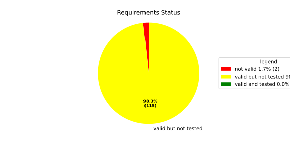
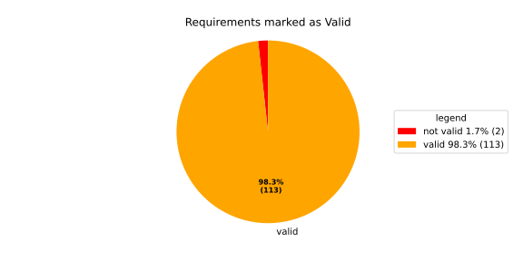
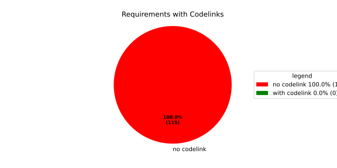

Component Requirements Statistics#
Overview#

In Detail#


No needs passed the filters
Failed Tests
Hint: This table should be empty. Before a PR can be merged all tests have to be successful.
No needs passed the filters
Skipped / Disabled Tests
No needs passed the filters
All passed Tests#
No needs passed the filters
Details About Testcases#
No needs passed the filters
No needs passed the filters
Test Log Files#
tests-report/score/health_monitor/src/rust/tests/test.log
exec ${PAGER:-/usr/bin/less} "$0" || exit 1
Executing tests from //score/health_monitor/src/rust:tests
-----------------------------------------------------------------------------
running 232 tests
test common::tests::duration_to_int_too_large - should panic ... ok
test common::tests::time_offset_diff_too_large - should panic ... ok
test common::tests::time_offset_valid ... ok
test common::tests::time_offset_wrong_order ... ok
test common::tests::time_range_from_interval_lower_too_large - should panic ... ok
test common::tests::time_range_from_interval_valid ... ok
test common::tests::time_range_new_valid ... ok
test common::tests::time_range_new_wrong_order - should panic ... ok
test deadline::common::tests::acquire_and_release_deadline ... ok
test deadline::common::tests::new_and_fields ... ok
test common::tests::duration_to_int_valid ... ok
test deadline::deadline_monitor::tests::deadline_failed_on_first_run_and_then_restarted_is_evaluated_as_error ... ok
test deadline::deadline_monitor::tests::deadline_outside_time_range_is_error_when_dropped_after_evaluate ... ok
test deadline::common::tests::concurrent_acquire ... ok
test deadline::deadline_monitor::tests::get_deadline_unknown_tag ... ok
test deadline::deadline_monitor::tests::start_stop_deadline_outside_ranges_is_evaluated_as_error ... ok
test deadline::deadline_monitor::tests::start_stop_deadline_outside_ranges_is_error_when_dropped_before_evaluate ... ok
test deadline::deadline_state::tests::as_u64_and_new ... ok
test deadline::deadline_state::tests::deadline_state_default_and_snapshot ... ok
test deadline::deadline_state::tests::deadline_state_update_none_returns_err ... ok
test deadline::deadline_state::tests::default_state ... ok
test deadline::deadline_state::tests::set_and_get_timestamp_ms ... ok
test deadline::deadline_state::tests::deadline_state_update_success ... ok
test deadline::deadline_state::tests::set_running ... ok
test deadline::deadline_state::tests::set_underrun ... ok
test deadline::ffi::tests::deadline_destroy_null_deadline ... ok
test deadline::ffi::tests::deadline_monitor_builder_add_deadline_invalid_range ... ok
test deadline::ffi::tests::deadline_monitor_builder_add_deadline_null_builder ... ok
test deadline::ffi::tests::deadline_monitor_builder_add_deadline_null_deadline_tag ... ok
test deadline::ffi::tests::deadline_monitor_builder_add_deadline_succeeds ... ok
test deadline::ffi::tests::deadline_monitor_builder_create_null_builder ... ok
test deadline::ffi::tests::deadline_monitor_builder_create_succeeds ... ok
test deadline::ffi::tests::deadline_monitor_builder_destroy_null_builder ... ok
test deadline::ffi::tests::deadline_monitor_destroy_null_monitor ... ok
test deadline::ffi::tests::deadline_monitor_get_deadline_null_deadline_handle ... ok
test deadline::ffi::tests::deadline_monitor_get_deadline_null_deadline_tag ... ok
test deadline::ffi::tests::deadline_monitor_get_deadline_null_monitor ... ok
test deadline::ffi::tests::deadline_monitor_get_deadline_unknown_deadline ... ok
test deadline::ffi::tests::deadline_monitor_get_deadline_succeeds ... ok
test deadline::ffi::tests::deadline_start_already_started ... ok
test deadline::ffi::tests::deadline_start_null_deadline ... ok
test deadline::ffi::tests::deadline_stop_null_deadline ... ok
test deadline::ffi::tests::deadline_start_succeeds ... ok
test deadline::ffi::tests::deadline_stop_succeeds ... ok
test ffi::tests::health_monitor_builder_add_deadline_monitor_null_deadline_monitor_builder ... ok
test ffi::tests::health_monitor_builder_add_deadline_monitor_null_hmon_builder ... ok
test ffi::tests::health_monitor_builder_add_deadline_monitor_null_monitor_tag ... ok
test ffi::tests::health_monitor_builder_add_deadline_monitor_succeeds ... ok
test ffi::tests::health_monitor_builder_add_heartbeat_monitor_null_hmon_builder ... ok
test ffi::tests::health_monitor_builder_add_heartbeat_monitor_null_heartbeat_monitor_builder ... ok
test ffi::tests::health_monitor_builder_add_heartbeat_monitor_null_monitor_tag ... ok
test ffi::tests::health_monitor_builder_add_heartbeat_monitor_succeeds ... ok
test ffi::tests::health_monitor_builder_add_logic_monitor_null_hmon_builder ... ok
test ffi::tests::health_monitor_builder_add_logic_monitor_null_logic_monitor_builder ... ok
test ffi::tests::health_monitor_builder_add_logic_monitor_null_monitor_tag ... ok
test ffi::tests::health_monitor_builder_add_logic_monitor_succeeds ... ok
test ffi::tests::health_monitor_builder_build_invalid_cycle_intervals ... ok
test ffi::tests::health_monitor_builder_build_no_monitors ... ok
test ffi::tests::health_monitor_builder_build_null_builder_handle ... ok
test ffi::tests::health_monitor_builder_build_null_monitor_handle ... ok
test ffi::tests::health_monitor_builder_build_succeeds ... ok
test ffi::tests::health_monitor_builder_build_thread_parameters ... ok
test ffi::tests::health_monitor_builder_build_valid_cycle_intervals_succeeds ... ok
test ffi::tests::health_monitor_builder_create_null_handle ... ok
test ffi::tests::health_monitor_builder_create_succeeds ... ok
test ffi::tests::health_monitor_builder_destroy_null_handle ... ok
test ffi::tests::health_monitor_destroy_null_hmon ... ok
test ffi::tests::health_monitor_get_deadline_monitor_already_taken ... ok
test ffi::tests::health_monitor_get_deadline_monitor_null_deadline_monitor ... ok
test ffi::tests::health_monitor_get_deadline_monitor_null_hmon ... ok
test ffi::tests::health_monitor_get_deadline_monitor_null_monitor_tag ... ok
test ffi::tests::health_monitor_get_deadline_monitor_succeeds ... ok
test ffi::tests::health_monitor_get_heartbeat_monitor_already_taken ... ok
test ffi::tests::health_monitor_get_heartbeat_monitor_null_heartbeat_monitor ... ok
test ffi::tests::health_monitor_get_heartbeat_monitor_null_monitor_tag ... ok
test ffi::tests::health_monitor_get_heartbeat_monitor_null_hmon ... ok
test ffi::tests::health_monitor_get_heartbeat_monitor_succeeds ... ok
test ffi::tests::health_monitor_get_logic_monitor_already_taken ... ok
test ffi::tests::health_monitor_get_logic_monitor_null_hmon ... ok
test ffi::tests::health_monitor_get_logic_monitor_null_logic_monitor ... ok
test ffi::tests::health_monitor_get_logic_monitor_null_monitor_tag ... ok
test ffi::tests::health_monitor_get_logic_monitor_succeeds ... ok
test ffi::tests::health_monitor_start_null_hmon ... ok
test ffi::tests::health_monitor_start_monitor_not_taken ... ok
test health_monitor::tests::health_monitor_builder_build_invalid_cycles ... ok
test health_monitor::tests::health_monitor_builder_build_no_monitors ... ok
test health_monitor::tests::health_monitor_builder_build_succeeds ... ok
test health_monitor::tests::health_monitor_builder_new_succeeds ... ok
test health_monitor::tests::health_monitor_get_deadline_monitor_available ... ok
test health_monitor::tests::health_monitor_get_deadline_monitor_invalid_state ... ok
test health_monitor::tests::health_monitor_get_deadline_monitor_taken ... ok
test health_monitor::tests::health_monitor_get_deadline_monitor_unknown ... ok
test health_monitor::tests::health_monitor_get_heartbeat_monitor_available ... ok
test health_monitor::tests::health_monitor_get_heartbeat_monitor_invalid_state ... ok
test health_monitor::tests::health_monitor_get_heartbeat_monitor_taken ... ok
test health_monitor::tests::health_monitor_get_heartbeat_monitor_unknown ... ok
test health_monitor::tests::health_monitor_get_logic_monitor_available ... ok
test health_monitor::tests::health_monitor_get_logic_monitor_invalid_state ... ok
[2026/06/01 13:07:08.7969051][7815][HMON][INFO] Monitoring thread started.
[2026/06/01 13:07:08.7969244][7815][HMON][INFO] Monitoring thread exiting.
test ffi::tests::health_monitor_start_succeeds ... ok
test health_monitor::tests::health_monitor_get_logic_monitor_taken ... ok
test health_monitor::tests::health_monitor_get_logic_monitor_unknown ... ok
[2026/06/01 13:07:08.7984349][7815][HMON][INFO] Monitoring thread started.
[2026/06/01 13:07:08.7984505][7815][HMON][INFO] Monitoring thread exiting.
test health_monitor::tests::health_monitor_start_monitors_not_taken - should panic ... ok
test health_monitor::tests::health_monitor_start_succeeds ... ok
test heartbeat::ffi::tests::heartbeat_monitor_builder_create_invalid_range ... ok
test heartbeat::ffi::tests::heartbeat_monitor_builder_create_null_builder ... ok
test heartbeat::ffi::tests::heartbeat_monitor_builder_create_succeeds ... ok
test heartbeat::ffi::tests::heartbeat_monitor_builder_destroy_null_builder ... ok
test heartbeat::ffi::tests::heartbeat_monitor_heartbeat_null_monitor ... ok
test heartbeat::ffi::tests::heartbeat_monitor_heartbeat_succeeds ... ok
test heartbeat::ffi::tests::heartbeat_monitor_destroy_null_monitor ... ok
test deadline::deadline_monitor::tests::monitor_with_multiple_running_deadlines ... ok
test heartbeat::heartbeat_monitor::tests::heartbeat_monitor_beat_early_evaluate_early ... ok
test heartbeat::heartbeat_monitor::tests::heartbeat_monitor_beat_early_evaluate_in_range ... ok
test heartbeat::heartbeat_monitor::tests::heartbeat_monitor_beat_in_range_evaluate_in_range ... ok
test heartbeat::heartbeat_monitor::tests::heartbeat_monitor_beat_early_evaluate_late ... ok
test heartbeat::heartbeat_monitor::tests::heartbeat_monitor_builder_build_invalid_internal_processing_cycle ... ok
test heartbeat::heartbeat_monitor::tests::heartbeat_monitor_builder_build_ok ... ok
test heartbeat::heartbeat_monitor::tests::heartbeat_monitor_beat_in_range_evaluate_late ... ok
test heartbeat::heartbeat_monitor::tests::heartbeat_monitor_beat_late_evaluate_late ... ok
test heartbeat::heartbeat_monitor::tests::heartbeat_monitor_cycle_early ... ok
test heartbeat::heartbeat_monitor::tests::heartbeat_monitor_multiple_beats_early_evaluate_early ... ok
test heartbeat::heartbeat_monitor::tests::heartbeat_monitor_cycle_in_range ... ok
test heartbeat::heartbeat_monitor::tests::heartbeat_monitor_multiple_beats_early_evaluate_in_range ... ok
test heartbeat::heartbeat_monitor::tests::heartbeat_monitor_multiple_beats_in_range_evaluate_in_range ... ok
test heartbeat::heartbeat_monitor::tests::heartbeat_monitor_cycle_late ... ok
test heartbeat::heartbeat_monitor::tests::heartbeat_monitor_multiple_beats_early_evaluate_late ... ok
test heartbeat::heartbeat_monitor::tests::heartbeat_monitor_no_beat_evaluate_early ... ok
test heartbeat::heartbeat_monitor::tests::heartbeat_monitor_no_beat_evaluate_in_range ... ok
test heartbeat::heartbeat_monitor::tests::heartbeat_monitor_multiple_beats_in_range_evaluate_late ... ok
test heartbeat::heartbeat_monitor::tests::heartbeat_monitor_multiple_beats_late_evaluate_late ... ok
test heartbeat::heartbeat_state::tests::snapshot_counter_increment ... ok
test heartbeat::heartbeat_state::tests::snapshot_default ... ok
test heartbeat::heartbeat_state::tests::snapshot_from_u64_max ... ok
test heartbeat::heartbeat_state::tests::snapshot_from_u64_valid ... ok
test heartbeat::heartbeat_state::tests::snapshot_from_u64_zero ... ok
test heartbeat::heartbeat_state::tests::snapshot_new_succeeds ... ok
test heartbeat::heartbeat_state::tests::snapshot_set_heartbeat_timestamp_out_of_range - should panic ... ok
test heartbeat::heartbeat_state::tests::snapshot_set_heartbeat_timestamp_valid ... ok
test heartbeat::heartbeat_state::tests::state_default ... ok
test heartbeat::heartbeat_state::tests::state_new ... ok
test heartbeat::heartbeat_state::tests::state_reset ... ok
test heartbeat::heartbeat_state::tests::state_snapshot ... ok
test heartbeat::heartbeat_state::tests::state_update_none ... ok
test heartbeat::heartbeat_state::tests::state_update_some ... ok
test logic::ffi::tests::logic_monitor_builder_add_state_null_allowed_states_many_elements ... ok
test logic::ffi::tests::logic_monitor_builder_add_state_null_allowed_states_zero_elements ... ok
test logic::ffi::tests::logic_monitor_builder_add_state_null_builder ... ok
test logic::ffi::tests::logic_monitor_builder_add_state_null_tag ... ok
test logic::ffi::tests::logic_monitor_builder_add_state_succeeds ... ok
test logic::ffi::tests::logic_monitor_builder_create_null_builder ... ok
test logic::ffi::tests::logic_monitor_builder_create_null_initial_state ... ok
test logic::ffi::tests::logic_monitor_builder_create_succeeds ... ok
test logic::ffi::tests::logic_monitor_builder_destroy_null_builder ... ok
test logic::ffi::tests::logic_monitor_destroy_null_monitor ... ok
test logic::ffi::tests::logic_monitor_state_fails ... ok
test logic::ffi::tests::logic_monitor_state_null_monitor ... ok
test logic::ffi::tests::logic_monitor_state_null_state ... ok
test logic::ffi::tests::logic_monitor_state_succeeds ... ok
test logic::ffi::tests::logic_monitor_transition_fails ... ok
test logic::ffi::tests::logic_monitor_transition_null_monitor ... ok
test logic::ffi::tests::logic_monitor_transition_null_target_state ... ok
test logic::ffi::tests::logic_monitor_transition_succeeds ... ok
test logic::logic_monitor::tests::logic_monitor_builder_build_no_states ... ok
test logic::logic_monitor::tests::logic_monitor_builder_build_succeeds ... ok
test logic::logic_monitor::tests::logic_monitor_builder_build_undefined_initial_state ... ok
test logic::logic_monitor::tests::logic_monitor_builder_build_undefined_target ... ok
test logic::logic_monitor::tests::logic_monitor_builder_new_succeeds ... ok
test logic::logic_monitor::tests::logic_monitor_evaluate_invalid_state ... ok
test logic::logic_monitor::tests::logic_monitor_evaluate_invalid_transition ... ok
test logic::logic_monitor::tests::logic_monitor_evaluate_succeeds ... ok
test logic::logic_monitor::tests::logic_monitor_state_indeterminate_current_state ... ok
test logic::logic_monitor::tests::logic_monitor_state_succeeds ... ok
test logic::logic_monitor::tests::logic_monitor_transition_indeterminate_current_state ... ok
test logic::logic_monitor::tests::logic_monitor_transition_invalid_transition ... ok
test logic::logic_monitor::tests::logic_monitor_transition_succeeds ... ok
test logic::logic_monitor::tests::logic_monitor_transition_unknown_node ... ok
test logic::logic_state::tests::snapshot_from_u64_max ... ok
test logic::logic_state::tests::snapshot_from_u64_valid ... ok
test logic::logic_state::tests::snapshot_from_u64_zero ... ok
test logic::logic_state::tests::snapshot_new_succeeds ... ok
test logic::logic_state::tests::snapshot_set_current_state_index_valid ... ok
test logic::logic_state::tests::snapshot_set_heartbeat_timestamp_out_of_range - should panic ... ok
test logic::logic_state::tests::snapshot_set_monitor_status_valid ... ok
test logic::logic_state::tests::state_new ... ok
test logic::logic_state::tests::state_snapshot ... ok
test logic::logic_state::tests::state_swap ... ok
test tag::tests::deadline_tag_debug ... ok
test tag::tests::deadline_tag_from_str ... ok
test tag::tests::deadline_tag_from_string ... ok
test tag::tests::deadline_tag_new ... ok
test tag::tests::deadline_tag_score_debug ... ok
test tag::tests::monitor_tag_debug ... ok
test tag::tests::monitor_tag_from_str ... ok
test tag::tests::monitor_tag_from_string ... ok
test tag::tests::monitor_tag_new ... ok
test tag::tests::monitor_tag_score_debug ... ok
test tag::tests::state_tag_debug ... ok
test tag::tests::state_tag_from_str ... ok
test tag::tests::state_tag_from_string ... ok
test tag::tests::state_tag_new ... ok
test tag::tests::state_tag_score_debug ... ok
test tag::tests::tag_debug ... ok
test tag::tests::tag_hash_is_eq ... ok
test tag::tests::tag_hash_is_ne ... ok
test tag::tests::tag_new ... ok
test tag::tests::tag_partial_eq_is_eq ... ok
test tag::tests::tag_partial_eq_is_ne ... ok
test tag::tests::tag_score_debug ... ok
test tag::tests::test_from_str ... ok
test tag::tests::test_from_string ... ok
test thread_ffi::tests::scheduler_policy_priority_max_null_priority ... ok
test thread_ffi::tests::scheduler_policy_priority_max_succeeds ... ok
test thread_ffi::tests::scheduler_policy_priority_min_null_priority ... ok
test thread_ffi::tests::scheduler_policy_priority_min_succeeds ... ok
test thread_ffi::tests::thread_parameters_affinity_null_affinity_many_elements ... ok
test thread_ffi::tests::thread_parameters_affinity_null_affinity_zero_elements ... ok
test thread_ffi::tests::thread_parameters_affinity_null_handle ... ok
test thread_ffi::tests::thread_parameters_affinity_succeeds ... ok
test thread_ffi::tests::thread_parameters_create_succeeds ... ok
test thread_ffi::tests::thread_parameters_destroy_null_handle ... ok
test thread_ffi::tests::thread_parameters_scheduler_parameters_invalid_priority ... ok
test thread_ffi::tests::thread_parameters_scheduler_parameters_null_handle ... ok
test thread_ffi::tests::thread_parameters_scheduler_parameters_succeeds ... ok
test thread_ffi::tests::thread_parameters_stack_size_null_handle ... ok
test thread_ffi::tests::thread_parameters_stack_size_succeeds ... ok
test worker::tests::monitoring_logic_report_alive_on_each_call_when_no_error ... ok
test heartbeat::heartbeat_monitor::tests::heartbeat_monitor_no_beat_evaluate_late ... ok
test worker::tests::monitoring_logic_report_error_when_deadline_failed ... ok
[2026/06/01 13:07:09.7562980][7815][HMON][INFO] Monitoring thread started.
test deadline::deadline_monitor::tests::start_stop_deadline_within_range_works ... ok
[2026/06/01 13:07:09.8167115][7815][HMON][WARN] Deadline (DeadlineTag(deadline_fast)) missed! Expected: 50, now: 60
[2026/06/01 13:07:09.8167394][7815][HMON][WARN] Deadline monitor with tag MonitorTag(deadline_monitor) reported error: TooLate.
[2026/06/01 13:07:09.8167466][7815][HMON][WARN] One or more monitors reported errors, skipping AliveAPI notification.
[2026/06/01 13:07:09.8167535][7815][HMON][INFO] Monitoring logic failed, stopping thread.
[2026/06/01 13:07:09.8167586][7815][HMON][INFO] Monitoring thread exiting.
test worker::tests::monitoring_logic_report_alive_respect_cycle ... ok
test worker::tests::unique_thread_runner_monitoring_works ... ok
test heartbeat::heartbeat_monitor::tests::heartbeat_monitor_timestamp_offset ... ok
test result: ok. 232 passed; 0 failed; 0 ignored; 0 measured; 0 filtered out; finished in 1.27s
tests-report/score/health_monitor/src/rust/loom_tests/test.log
exec ${PAGER:-/usr/bin/less} "$0" || exit 1
Executing tests from //score/health_monitor/src/rust:loom_tests
-----------------------------------------------------------------------------
running 3 tests
test heartbeat::heartbeat_monitor::loom_tests::heartbeat_monitor_heartbeat_evaluate_too_early ... ok
test heartbeat::heartbeat_monitor::loom_tests::heartbeat_monitor_heartbeat_evaluate_in_range ... ok
test heartbeat::heartbeat_monitor::loom_tests::heartbeat_monitor_heartbeat_evaluate_too_late ... ok
test result: ok. 3 passed; 0 failed; 0 ignored; 0 measured; 0 filtered out; finished in 0.71s
tests-report/score/health_monitor/src/cpp/cpp_tests/test.log
exec ${PAGER:-/usr/bin/less} "$0" || exit 1
Executing tests from //score/health_monitor/src/cpp:cpp_tests
-----------------------------------------------------------------------------
Running main() from gmock_main.cc
[==========] Running 1 test from 1 test suite.
[----------] Global test environment set-up.
[----------] 1 test from HealthMonitorTest
[ RUN ] HealthMonitorTest.TestName
[2026/06/01 13:07:10.0989262][score/health_monitor/src/rust/worker.rs:121][8244][HMON][INFO] Monitoring thread started.
[2026/06/01 13:07:10.0990149][score/health_monitor/src/rust/deadline/deadline_monitor.rs:217][8244][HMON][ERROR] Deadline DeadlineTag(deadline_1) stopped too early by 100 ms
[2026/06/01 13:07:10.1497675][score/health_monitor/src/rust/deadline/deadline_monitor.rs:267][8244][HMON][WARN] Deadline (DeadlineTag(deadline_1)) finished too early!
[2026/06/01 13:07:10.1497986][score/health_monitor/src/rust/worker.rs:58][8244][HMON][WARN] Deadline monitor with tag MonitorTag(deadline_monitor) reported error: TooEarly.
[2026/06/01 13:07:10.1498095][score/health_monitor/src/rust/heartbeat/heartbeat_monitor.rs:253][8244][HMON][WARN] Heartbeat occurred too early, offset to range: 100
[2026/06/01 13:07:10.1498145][score/health_monitor/src/rust/worker.rs:64][8244][HMON][WARN] Heartbeat monitor with tag MonitorTag(heartbeat_monitor) reported error: TooEarly.
[2026/06/01 13:07:10.1498203][score/health_monitor/src/rust/worker.rs:85][8244][HMON][WARN] One or more monitors reported errors, skipping AliveAPI notification.
[2026/06/01 13:07:10.1498247][score/health_monitor/src/rust/worker.rs:132][8244][HMON][INFO] Monitoring logic failed, stopping thread.
[2026/06/01 13:07:10.1498288][score/health_monitor/src/rust/worker.rs:139][8244][HMON][INFO] Monitoring thread exiting.
[ OK ] HealthMonitorTest.TestName (51 ms)
[----------] 1 test from HealthMonitorTest (51 ms total)
[----------] Global test environment tear-down
[==========] 1 test from 1 test suite ran. (51 ms total)
[ PASSED ] 1 test.
tests-report/score/launch_manager/daemon/src/process_state_client/process_state_client_ut/test.log
exec ${PAGER:-/usr/bin/less} "$0" || exit 1
Executing tests from //score/launch_manager/daemon/src/process_state_client:process_state_client_ut
-----------------------------------------------------------------------------
Running main() from gmock_main.cc
[==========] Running 4 tests from 1 test suite.
[----------] Global test environment set-up.
[----------] 4 tests from ProcessStateClient_UT
[ RUN ] ProcessStateClient_UT.ProcessStateClient_ConstructReceiver_Succeeds
[ OK ] ProcessStateClient_UT.ProcessStateClient_ConstructReceiver_Succeeds (0 ms)
[ RUN ] ProcessStateClient_UT.ProcessStateClient_QueueOneProcess_Succeeds
[ OK ] ProcessStateClient_UT.ProcessStateClient_QueueOneProcess_Succeeds (0 ms)
[ RUN ] ProcessStateClient_UT.ProcessStateClient_QueueMaxNumberOfProcesses_Succeeds
[ OK ] ProcessStateClient_UT.ProcessStateClient_QueueMaxNumberOfProcesses_Succeeds (8 ms)
[ RUN ] ProcessStateClient_UT.ProcessStateClient_QueueOneProcessTooMany_Fails
mw::log initialization error: Error No logging configuration files could be found. occurred with context information: Failed to load configuration files. Fallback to console logging.
2026/06/01 13:07:07.9227519 1538361 000 ECU1 NONE LM log error verbose 1 Failed to queue posix process
2026/06/01 13:07:07.9227520 1538363 000 ECU1 NONE LM log error verbose 1 ProcessStateReceiver::getNextChangedPosixProcess: Overflow occurred, will be reported as kCommunicationError
[ OK ] ProcessStateClient_UT.ProcessStateClient_QueueOneProcessTooMany_Fails (5 ms)
[----------] 4 tests from ProcessStateClient_UT (15 ms total)
[----------] Global test environment tear-down
[==========] 4 tests from 1 test suite ran. (15 ms total)
[ PASSED ] 4 tests.
tests-report/score/launch_manager/daemon/src/recovery_client/recovery_client_UT/test.log
exec ${PAGER:-/usr/bin/less} "$0" || exit 1
Executing tests from //score/launch_manager/daemon/src/recovery_client:recovery_client_UT
-----------------------------------------------------------------------------
Running main() from gmock_main.cc
[==========] Running 5 tests from 1 test suite.
[----------] Global test environment set-up.
[----------] 5 tests from RecoveryClientTest
[ RUN ] RecoveryClientTest.SendSingleRequest
[ OK ] RecoveryClientTest.SendSingleRequest (0 ms)
[ RUN ] RecoveryClientTest.GetNextRequest
[ OK ] RecoveryClientTest.GetNextRequest (0 ms)
[ RUN ] RecoveryClientTest.GetNextRequestEmpty
[ OK ] RecoveryClientTest.GetNextRequestEmpty (0 ms)
[ RUN ] RecoveryClientTest.RingBufferFull
[ OK ] RecoveryClientTest.RingBufferFull (0 ms)
[ RUN ] RecoveryClientTest.FIFOOrdering
[ OK ] RecoveryClientTest.FIFOOrdering (0 ms)
[----------] 5 tests from RecoveryClientTest (0 ms total)
[----------] Global test environment tear-down
[==========] 5 tests from 1 test suite ran. (0 ms total)
[ PASSED ] 5 tests.
tests-report/score/launch_manager/daemon/src/alive_monitor/details/recovery/Notification_UT/test.log
exec ${PAGER:-/usr/bin/less} "$0" || exit 1
Executing tests from //score/launch_manager/daemon/src/alive_monitor/details/recovery:Notification_UT
-----------------------------------------------------------------------------
Running main() from gmock_main.cc
[==========] Running 5 tests from 2 test suites.
[----------] Global test environment set-up.
[----------] 4 tests from NotificationWithConfigTest
[ RUN ] NotificationWithConfigTest.CanGetNotificationName
mw::log initialization error: Error No logging configuration files could be found. occurred with context information: Failed to load configuration files. Fallback to console logging.
[ OK ] NotificationWithConfigTest.CanGetNotificationName (3 ms)
[ RUN ] NotificationWithConfigTest.SendsRequestAndNeverTimesOut
[ OK ] NotificationWithConfigTest.SendsRequestAndNeverTimesOut (0 ms)
[ RUN ] NotificationWithConfigTest.TimesOutWhenSendingRequestFails
2026/06/01 13:07:07.9227947 1542634 000 ECU1 NONE Rcvy log error verbose 2 Notification (TestNotification) Failed to enqueue recovery request (ring buffer full)
[ OK ] NotificationWithConfigTest.TimesOutWhenSendingRequestFails (1 ms)
[ RUN ] NotificationWithConfigTest.ProxyInitializationFails
2026/06/01 13:07:07.9227947 1542641 000 ECU1 NONE Rcvy log error verbose 3 Notification (TestNotification) Invalid ProcessGroupState identifier: InvalidIdentifier
[ OK ] NotificationWithConfigTest.ProxyInitializationFails (0 ms)
[----------] 4 tests from NotificationWithConfigTest (6 ms total)
[----------] 1 test from NotificationWithoutConfigTest
[ RUN ] NotificationWithoutConfigTest.WatchdogNotificationGoesDirectlyToTimeout
[ OK ] NotificationWithoutConfigTest.WatchdogNotificationGoesDirectlyToTimeout (1 ms)
[----------] 1 test from NotificationWithoutConfigTest (2 ms total)
[----------] Global test environment tear-down
[==========] 5 tests from 2 test suites ran. (10 ms total)
[ PASSED ] 5 tests.
tests-report/score/launch_manager/daemon/src/process_group_manager/details/safeprocessmap_UT/test.log
exec ${PAGER:-/usr/bin/less} "$0" || exit 1
Executing tests from //score/launch_manager/daemon/src/process_group_manager/details:safeprocessmap_UT
-----------------------------------------------------------------------------
Running main() from gmock_main.cc
[==========] Running 13 tests from 1 test suite.
[----------] Global test environment set-up.
[----------] 13 tests from SafeProcessMapTest
[ RUN ] SafeProcessMapTest.ConstructWithZeroCapacity
[ OK ] SafeProcessMapTest.ConstructWithZeroCapacity (0 ms)
[ RUN ] SafeProcessMapTest.FindTerminatedWithNegativePidReturnsInvalid
[ OK ] SafeProcessMapTest.FindTerminatedWithNegativePidReturnsInvalid (0 ms)
[ RUN ] SafeProcessMapTest.FindTerminatedInsertsEntryWhenPidNotPresent
[ OK ] SafeProcessMapTest.FindTerminatedInsertsEntryWhenPidNotPresent (0 ms)
[ RUN ] SafeProcessMapTest.FindTerminatedMatchesExistingInsertAndCallsCallback
[ OK ] SafeProcessMapTest.FindTerminatedMatchesExistingInsertAndCallsCallback (0 ms)
[ RUN ] SafeProcessMapTest.InsertIntoEmptyTreeReturnsZero
[ OK ] SafeProcessMapTest.InsertIntoEmptyTreeReturnsZero (0 ms)
[ RUN ] SafeProcessMapTest.InsertMatchesExistingFindTerminatedEntry
[ OK ] SafeProcessMapTest.InsertMatchesExistingFindTerminatedEntry (0 ms)
[ RUN ] SafeProcessMapTest.InsertMultipleNodesThenFindTerminatedRemovesAll
[ OK ] SafeProcessMapTest.InsertMultipleNodesThenFindTerminatedRemovesAll (4 ms)
[ RUN ] SafeProcessMapTest.InsertBeyondCapacityReturnsOutOfMemory
[ OK ] SafeProcessMapTest.InsertBeyondCapacityReturnsOutOfMemory (2 ms)
[ RUN ] SafeProcessMapTest.InsertSamePidTwiceYieldsUntilFindTerminatedResolves
[ OK ] SafeProcessMapTest.InsertSamePidTwiceYieldsUntilFindTerminatedResolves (10 ms)
[ RUN ] SafeProcessMapTest.FindTerminatedSamePidTwiceYieldsUntilInsertResolves
[ OK ] SafeProcessMapTest.FindTerminatedSamePidTwiceYieldsUntilInsertResolves (10 ms)
[ RUN ] SafeProcessMapTest.FindTerminatedWorksAtMaxTreeDepth
[ OK ] SafeProcessMapTest.FindTerminatedWorksAtMaxTreeDepth (0 ms)
[ RUN ] SafeProcessMapTest.ConcurrentInsertAndFindFromMultipleThreads
[ OK ] SafeProcessMapTest.ConcurrentInsertAndFindFromMultipleThreads (2457 ms)
[ RUN ] SafeProcessMapTest.ConcurrentFindAndInsertFromMultipleThreads
[ OK ] SafeProcessMapTest.ConcurrentFindAndInsertFromMultipleThreads (2623 ms)
[----------] 13 tests from SafeProcessMapTest (5111 ms total)
[----------] Global test environment tear-down
[==========] 13 tests from 1 test suite ran. (5112 ms total)
[ PASSED ] 13 tests.
tests-report/score/launch_manager/daemon/src/process_group_manager/details/oshandler_UT/test.log
exec ${PAGER:-/usr/bin/less} "$0" || exit 1
Executing tests from //score/launch_manager/daemon/src/process_group_manager/details:oshandler_UT
-----------------------------------------------------------------------------
Running main() from gmock_main.cc
[==========] Running 6 tests from 1 test suite.
[----------] Global test environment set-up.
[----------] 6 tests from OsHandlerTest
[ RUN ] OsHandlerTest.WaitReturnsProcessId_FindTerminatedIsCalled
[ OK ] OsHandlerTest.WaitReturnsProcessId_FindTerminatedIsCalled (101 ms)
[ RUN ] OsHandlerTest.WaitReturnsError_OsHandlerSleepsAndDoesNotCallFindTerminated
[ OK ] OsHandlerTest.WaitReturnsError_OsHandlerSleepsAndDoesNotCallFindTerminated (100 ms)
[ RUN ] OsHandlerTest.WaitReturnsZeroPid_OsHandlerSleepsAndDoesNotCallFindTerminated
[ OK ] OsHandlerTest.WaitReturnsZeroPid_OsHandlerSleepsAndDoesNotCallFindTerminated (100 ms)
[ RUN ] OsHandlerTest.WaitReturnsProcessIdBeforeRegistration_LaterRegistrationReceivesStoredTermination
[ OK ] OsHandlerTest.WaitReturnsProcessIdBeforeRegistration_LaterRegistrationReceivesStoredTermination (100 ms)
[ RUN ] OsHandlerTest.WaitReturnsUnknownPidWhenMapIsFull_OutOfResourcesPathDoesNotNotifyCallbacks
mw::log initialization error: Error No logging configuration files could be found. occurred with context information: Failed to load configuration files. Fallback to console logging.
2026/06/02 14:25:28.328986 1123165 000 ECU1 NONE LM log error verbose 3 No more resources available to track process with PID 9999 (SafeProcessMap capacity exceeded).
[ OK ] OsHandlerTest.WaitReturnsUnknownPidWhenMapIsFull_OutOfResourcesPathDoesNotNotifyCallbacks (109 ms)
[ RUN ] OsHandlerTest.WaitReturnsErrorThenProcessId_HandlerRecoversAndInvokesCallback
[ OK ] OsHandlerTest.WaitReturnsErrorThenProcessId_HandlerRecoversAndInvokesCallback (201 ms)
[----------] 6 tests from OsHandlerTest (804 ms total)
[----------] Global test environment tear-down
[==========] 6 tests from 1 test suite ran. (805 ms total)
[ PASSED ] 6 tests.
tests-report/score/launch_manager/daemon/src/common/identifier_hash_UT/test.log
exec ${PAGER:-/usr/bin/less} "$0" || exit 1
Executing tests from //score/launch_manager/daemon/src/common:identifier_hash_UT
-----------------------------------------------------------------------------
Running main() from gmock_main.cc
[==========] Running 7 tests from 1 test suite.
[----------] Global test environment set-up.
[----------] 7 tests from IdentifierHashTest
[ RUN ] IdentifierHashTest.IdentifierHash_with_string_view_created
[ OK ] IdentifierHashTest.IdentifierHash_with_string_view_created (0 ms)
[ RUN ] IdentifierHashTest.IdentifierHash_with_string_created
[ OK ] IdentifierHashTest.IdentifierHash_with_string_created (0 ms)
[ RUN ] IdentifierHashTest.IdentifierHash_default_created
[ OK ] IdentifierHashTest.IdentifierHash_default_created (0 ms)
[ RUN ] IdentifierHashTest.IdentifierHash_invalid_hash_no_string_representation
[ OK ] IdentifierHashTest.IdentifierHash_invalid_hash_no_string_representation (0 ms)
[ RUN ] IdentifierHashTest.IdentifierHash_no_dangling_pointer_after_source_string_dies
[ OK ] IdentifierHashTest.IdentifierHash_no_dangling_pointer_after_source_string_dies (0 ms)
[ RUN ] IdentifierHashTest.IdentifierHash_EqualityOperators
[ OK ] IdentifierHashTest.IdentifierHash_EqualityOperators (0 ms)
[ RUN ] IdentifierHashTest.IdentifierHash_LessThanOperator
[ OK ] IdentifierHashTest.IdentifierHash_LessThanOperator (0 ms)
[----------] 7 tests from IdentifierHashTest (0 ms total)
[----------] Global test environment tear-down
[==========] 7 tests from 1 test suite ran. (0 ms total)
[ PASSED ] 7 tests.
tests-report/score/launch_manager/daemon/src/common/concurrency/mpmc_concurrent_queue_tsan_test/test.log
exec ${PAGER:-/usr/bin/less} "$0" || exit 1
Executing tests from //score/launch_manager/daemon/src/common/concurrency:mpmc_concurrent_queue_tsan_test
-----------------------------------------------------------------------------
Running main() from gmock_main.cc
[==========] Running 15 tests from 5 test suites.
[----------] Global test environment set-up.
[----------] 5 tests from MPMCConcurrentQueueTest_Basic
[ RUN ] MPMCConcurrentQueueTest_Basic.PushAndPopSingleItem
[ OK ] MPMCConcurrentQueueTest_Basic.PushAndPopSingleItem (0 ms)
[ RUN ] MPMCConcurrentQueueTest_Basic.PushAndPopPreservesOrder
[ OK ] MPMCConcurrentQueueTest_Basic.PushAndPopPreservesOrder (0 ms)
[ RUN ] MPMCConcurrentQueueTest_Basic.LvaluePushCopiesItem
[ OK ] MPMCConcurrentQueueTest_Basic.LvaluePushCopiesItem (0 ms)
[ RUN ] MPMCConcurrentQueueTest_Basic.RvaluePushWorksWithMoveOnlyType
[ OK ] MPMCConcurrentQueueTest_Basic.RvaluePushWorksWithMoveOnlyType (0 ms)
[ RUN ] MPMCConcurrentQueueTest_Basic.PopReturnsNulloptOnSemaphoreWaitFailure
[ OK ] MPMCConcurrentQueueTest_Basic.PopReturnsNulloptOnSemaphoreWaitFailure (20 ms)
[----------] 5 tests from MPMCConcurrentQueueTest_Basic (21 ms total)
[----------] 2 tests from MPMCConcurrentQueueTest_Timeout
[ RUN ] MPMCConcurrentQueueTest_Timeout.PushWithTimeoutSucceedsWhenSlotAvailable
[ OK ] MPMCConcurrentQueueTest_Timeout.PushWithTimeoutSucceedsWhenSlotAvailable (0 ms)
[ RUN ] MPMCConcurrentQueueTest_Timeout.PushWithTimeoutReturnsFalseWhenFull
[ OK ] MPMCConcurrentQueueTest_Timeout.PushWithTimeoutReturnsFalseWhenFull (20 ms)
[----------] 2 tests from MPMCConcurrentQueueTest_Timeout (20 ms total)
[----------] 3 tests from MPMCConcurrentQueueTest_Stop
[ RUN ] MPMCConcurrentQueueTest_Stop.PushReturnsFalseAfterStop
[ OK ] MPMCConcurrentQueueTest_Stop.PushReturnsFalseAfterStop (0 ms)
[ RUN ] MPMCConcurrentQueueTest_Stop.PopReturnsNulloptWhenStoppedAndEmpty
[ OK ] MPMCConcurrentQueueTest_Stop.PopReturnsNulloptWhenStoppedAndEmpty (0 ms)
[ RUN ] MPMCConcurrentQueueTest_Stop.ItemsAreDroppedAfterStop
[ OK ] MPMCConcurrentQueueTest_Stop.ItemsAreDroppedAfterStop (0 ms)
[----------] 3 tests from MPMCConcurrentQueueTest_Stop (0 ms total)
[----------] 4 tests from MPMCConcurrentQueueTest_Blocking
[ RUN ] MPMCConcurrentQueueTest_Blocking.PopBlocksUntilItemAvailable
[ OK ] MPMCConcurrentQueueTest_Blocking.PopBlocksUntilItemAvailable (0 ms)
[ RUN ] MPMCConcurrentQueueTest_Blocking.PushBlocksWhenFull
[ OK ] MPMCConcurrentQueueTest_Blocking.PushBlocksWhenFull (0 ms)
[ RUN ] MPMCConcurrentQueueTest_Blocking.StopUnblocksBlockedConsumer
[ OK ] MPMCConcurrentQueueTest_Blocking.StopUnblocksBlockedConsumer (0 ms)
[ RUN ] MPMCConcurrentQueueTest_Blocking.StopUnblocksBlockedProducer
[ OK ] MPMCConcurrentQueueTest_Blocking.StopUnblocksBlockedProducer (0 ms)
[----------] 4 tests from MPMCConcurrentQueueTest_Blocking (0 ms total)
[----------] 1 test from MPMCConcurrentQueueTest_MPMC
[ RUN ] MPMCConcurrentQueueTest_MPMC.AllItemsDelivered
[ OK ] MPMCConcurrentQueueTest_MPMC.AllItemsDelivered (1 ms)
[----------] 1 test from MPMCConcurrentQueueTest_MPMC (1 ms total)
[----------] Global test environment tear-down
[==========] 15 tests from 5 test suites ran. (45 ms total)
[ PASSED ] 15 tests.
tests-report/score/launch_manager/daemon/src/common/concurrency/mpmc_concurrent_queue_test/test.log
exec ${PAGER:-/usr/bin/less} "$0" || exit 1
Executing tests from //score/launch_manager/daemon/src/common/concurrency:mpmc_concurrent_queue_test
-----------------------------------------------------------------------------
Running main() from gmock_main.cc
[==========] Running 15 tests from 5 test suites.
[----------] Global test environment set-up.
[----------] 5 tests from MPMCConcurrentQueueTest_Basic
[ RUN ] MPMCConcurrentQueueTest_Basic.PushAndPopSingleItem
[ OK ] MPMCConcurrentQueueTest_Basic.PushAndPopSingleItem (0 ms)
[ RUN ] MPMCConcurrentQueueTest_Basic.PushAndPopPreservesOrder
[ OK ] MPMCConcurrentQueueTest_Basic.PushAndPopPreservesOrder (0 ms)
[ RUN ] MPMCConcurrentQueueTest_Basic.LvaluePushCopiesItem
[ OK ] MPMCConcurrentQueueTest_Basic.LvaluePushCopiesItem (0 ms)
[ RUN ] MPMCConcurrentQueueTest_Basic.RvaluePushWorksWithMoveOnlyType
[ OK ] MPMCConcurrentQueueTest_Basic.RvaluePushWorksWithMoveOnlyType (0 ms)
[ RUN ] MPMCConcurrentQueueTest_Basic.PopReturnsNulloptOnSemaphoreWaitFailure
[ OK ] MPMCConcurrentQueueTest_Basic.PopReturnsNulloptOnSemaphoreWaitFailure (20 ms)
[----------] 5 tests from MPMCConcurrentQueueTest_Basic (20 ms total)
[----------] 2 tests from MPMCConcurrentQueueTest_Timeout
[ RUN ] MPMCConcurrentQueueTest_Timeout.PushWithTimeoutSucceedsWhenSlotAvailable
[ OK ] MPMCConcurrentQueueTest_Timeout.PushWithTimeoutSucceedsWhenSlotAvailable (0 ms)
[ RUN ] MPMCConcurrentQueueTest_Timeout.PushWithTimeoutReturnsFalseWhenFull
[ OK ] MPMCConcurrentQueueTest_Timeout.PushWithTimeoutReturnsFalseWhenFull (20 ms)
[----------] 2 tests from MPMCConcurrentQueueTest_Timeout (20 ms total)
[----------] 3 tests from MPMCConcurrentQueueTest_Stop
[ RUN ] MPMCConcurrentQueueTest_Stop.PushReturnsFalseAfterStop
[ OK ] MPMCConcurrentQueueTest_Stop.PushReturnsFalseAfterStop (0 ms)
[ RUN ] MPMCConcurrentQueueTest_Stop.PopReturnsNulloptWhenStoppedAndEmpty
[ OK ] MPMCConcurrentQueueTest_Stop.PopReturnsNulloptWhenStoppedAndEmpty (0 ms)
[ RUN ] MPMCConcurrentQueueTest_Stop.ItemsAreDroppedAfterStop
[ OK ] MPMCConcurrentQueueTest_Stop.ItemsAreDroppedAfterStop (0 ms)
[----------] 3 tests from MPMCConcurrentQueueTest_Stop (0 ms total)
[----------] 4 tests from MPMCConcurrentQueueTest_Blocking
[ RUN ] MPMCConcurrentQueueTest_Blocking.PopBlocksUntilItemAvailable
[ OK ] MPMCConcurrentQueueTest_Blocking.PopBlocksUntilItemAvailable (0 ms)
[ RUN ] MPMCConcurrentQueueTest_Blocking.PushBlocksWhenFull
[ OK ] MPMCConcurrentQueueTest_Blocking.PushBlocksWhenFull (0 ms)
[ RUN ] MPMCConcurrentQueueTest_Blocking.StopUnblocksBlockedConsumer
[ OK ] MPMCConcurrentQueueTest_Blocking.StopUnblocksBlockedConsumer (0 ms)
[ RUN ] MPMCConcurrentQueueTest_Blocking.StopUnblocksBlockedProducer
[ OK ] MPMCConcurrentQueueTest_Blocking.StopUnblocksBlockedProducer (0 ms)
[----------] 4 tests from MPMCConcurrentQueueTest_Blocking (0 ms total)
[----------] 1 test from MPMCConcurrentQueueTest_MPMC
[ RUN ] MPMCConcurrentQueueTest_MPMC.AllItemsDelivered
[ OK ] MPMCConcurrentQueueTest_MPMC.AllItemsDelivered (0 ms)
[----------] 1 test from MPMCConcurrentQueueTest_MPMC (0 ms total)
[----------] Global test environment tear-down
[==========] 15 tests from 5 test suites ran. (42 ms total)
[ PASSED ] 15 tests.
tests-report/tests/integration/smoke/smoke/test.log
exec ${PAGER:-/usr/bin/less} "$0" || exit 1
Executing tests from //tests/integration/smoke:smoke
-----------------------------------------------------------------------------
============================= test session starts ==============================
platform linux -- Python 3.12.12, pytest-9.0.3, pluggy-1.5.0
rootdir: /home/runner/.bazel/sandbox/processwrapper-sandbox/884/execroot/_main/bazel-out/k8-fastbuild/bin/tests/integration/smoke/smoke.runfiles/score_itf+
configfile: pytest.ini
collected 1 item
../score_itf+::test_smoke
-------------------------------- live log setup --------------------------------
[2026-06-02 14:25:31.562] [INFO] [score.itf.plugins.docker] Executing custom image bootstrap command: tests/utils/environments/x86_64-linux/x86_64-linux.sh
[2026-06-02 14:25:35.459] [DEBUG] [docker.utils.config] Trying paths: ['/home/runner/.docker/config.json', '/home/runner/.dockercfg']
[2026-06-02 14:25:35.459] [DEBUG] [docker.utils.config] Found file at path: /home/runner/.docker/config.json
[2026-06-02 14:25:35.459] [DEBUG] [docker.auth] Found 'auths' section
[2026-06-02 14:25:35.459] [DEBUG] [docker.auth] Found entry (registry='https://index.docker.io/v1/', username='githubactions')
[2026-06-02 14:25:35.477] [DEBUG] [urllib3.connectionpool] http://localhost:None "GET /version HTTP/1.1" 200 823
[2026-06-02 14:25:35.522] [DEBUG] [urllib3.connectionpool] http://localhost:None "POST /v1.48/containers/create HTTP/1.1" 201 88
[2026-06-02 14:25:35.525] [DEBUG] [urllib3.connectionpool] http://localhost:None "GET /v1.48/containers/eb876673d977c43f5e027d47d5abff6d8e1c902da578a8eea1ae0d2fb2c89294/json HTTP/1.1" 200 None
[2026-06-02 14:25:35.713] [DEBUG] [urllib3.connectionpool] http://localhost:None "POST /v1.48/containers/eb876673d977c43f5e027d47d5abff6d8e1c902da578a8eea1ae0d2fb2c89294/start HTTP/1.1" 204 0
[2026-06-02 14:25:35.714] [DEBUG] [docker.utils.config] Trying paths: ['/home/runner/.docker/config.json', '/home/runner/.dockercfg']
[2026-06-02 14:25:35.714] [DEBUG] [docker.utils.config] Found file at path: /home/runner/.docker/config.json
[2026-06-02 14:25:35.715] [DEBUG] [docker.auth] Found 'auths' section
[2026-06-02 14:25:35.715] [DEBUG] [docker.auth] Found entry (registry='https://index.docker.io/v1/', username='githubactions')
[2026-06-02 14:25:35.727] [DEBUG] [urllib3.connectionpool] http://localhost:None "GET /version HTTP/1.1" 200 823
[2026-06-02 14:25:35.730] [DEBUG] [urllib3.connectionpool] http://localhost:None "POST /v1.48/containers/eb876673d977c43f5e027d47d5abff6d8e1c902da578a8eea1ae0d2fb2c89294/exec HTTP/1.1" 201 74
[2026-06-02 14:25:35.731] [DEBUG] [urllib3.connectionpool] http://localhost:None "POST /v1.48/exec/de0195a924f0c9cec43fbf288233c5e3d4173726b64473b83b8e8e2e3c91d0a6/start HTTP/1.1" 101 0
[2026-06-02 14:25:35.807] [DEBUG] [urllib3.connectionpool] http://localhost:None "GET /v1.48/exec/de0195a924f0c9cec43fbf288233c5e3d4173726b64473b83b8e8e2e3c91d0a6/json HTTP/1.1" 200 390
[2026-06-02 14:25:35.859] [DEBUG] [urllib3.connectionpool] http://localhost:None "PUT /v1.48/containers/eb876673d977c43f5e027d47d5abff6d8e1c902da578a8eea1ae0d2fb2c89294/archive?path=%2Ftmp HTTP/1.1" 200 0
[2026-06-02 14:25:35.862] [DEBUG] [urllib3.connectionpool] http://localhost:None "POST /v1.48/containers/eb876673d977c43f5e027d47d5abff6d8e1c902da578a8eea1ae0d2fb2c89294/exec HTTP/1.1" 201 74
[2026-06-02 14:25:35.864] [DEBUG] [urllib3.connectionpool] http://localhost:None "POST /v1.48/exec/c0ee854d9a170671bd25de219320c9cd4b2c8ba58b68a331e46255da0d65383d/start HTTP/1.1" 101 0
[2026-06-02 14:25:35.951] [DEBUG] [urllib3.connectionpool] http://localhost:None "GET /v1.48/exec/c0ee854d9a170671bd25de219320c9cd4b2c8ba58b68a331e46255da0d65383d/json HTTP/1.1" 200 416
[2026-06-02 14:25:35.952] [INFO] [tests.utils.testing_utils.setup_test] Test case setup finished
-------------------------------- live log call ---------------------------------
[2026-06-02 14:25:35.958] [DEBUG] [urllib3.connectionpool] http://localhost:None "POST /v1.48/containers/eb876673d977c43f5e027d47d5abff6d8e1c902da578a8eea1ae0d2fb2c89294/exec HTTP/1.1" 201 74
[2026-06-02 14:25:35.965] [DEBUG] [urllib3.connectionpool] http://localhost:None "POST /v1.48/exec/65b89f2231e0fe5ae18eb7026b4d8d7868988e472922c133f1905c0c997fdb61/start HTTP/1.1" 101 0
[2026-06-02 14:25:36.039] [DEBUG] [urllib3.connectionpool] http://localhost:None "GET /v1.48/exec/65b89f2231e0fe5ae18eb7026b4d8d7868988e472922c133f1905c0c997fdb61/json HTTP/1.1" 200 404
[2026-06-02 14:25:36.041] [DEBUG] [urllib3.connectionpool] http://localhost:None "POST /v1.48/containers/eb876673d977c43f5e027d47d5abff6d8e1c902da578a8eea1ae0d2fb2c89294/exec HTTP/1.1" 201 74
[2026-06-02 14:25:36.043] [DEBUG] [urllib3.connectionpool] http://localhost:None "POST /v1.48/exec/b341fbaf80ccb4aab5153f01b9735243a01c5f5e52b29c01067d1692e535ad24/start HTTP/1.1" 101 0
[2026-06-02 14:25:36.097] [DEBUG] [urllib3.connectionpool] http://localhost:None "GET /v1.48/exec/b341fbaf80ccb4aab5153f01b9735243a01c5f5e52b29c01067d1692e535ad24/json HTTP/1.1" 200 442
[2026-06-02 14:25:36.097] [INFO] [launch_manager] mw::log
[2026-06-02 14:25:36.097] [INFO] [launch_manager] initialization error:
[2026-06-02 14:25:36.098] [INFO] [launch_manager] Error No logging configuration files could be found. occurred
[2026-06-02 14:25:36.098] [INFO] [launch_manager] with context information:
[2026-06-02 14:25:36.098] [INFO] [launch_manager] Failed to load configuration files. Fallback to console logging.
[2026-06-02 14:25:36.098] [INFO] [launch_manager] 2026/06/02 14:25:36.336094 1194242 000 ECU1 NONE Fcty log warn verbose 2
[2026-06-02 14:25:36.098] [INFO] [launch_manager] Factory for FlatCfg MachineConfig: No watchdog configured
[2026-06-02 14:25:36.098] [INFO] [launch_manager] [==========] Running 1 test from 1 test suite.
[2026-06-02 14:25:36.099] [INFO] [launch_manager] [----------] Global test environment set-up.
[2026-06-02 14:25:36.099] [INFO] [launch_manager] [----------] 1 test from Smoke
[2026-06-02 14:25:36.099] [INFO] [launch_manager] [ RUN ] Smoke.Daemon
[2026-06-02 14:25:36.099] [DEBUG] [urllib3.connectionpool] http://localhost:None "POST /v1.48/containers/eb876673d977c43f5e027d47d5abff6d8e1c902da578a8eea1ae0d2fb2c89294/exec HTTP/1.1" 201 74
[2026-06-02 14:25:36.099] [INFO] [launch_manager] [ STEP ] Control daemon report kRunning
[2026-06-02 14:25:36.101] [INFO] [launch_manager] [ END STEP ] Control daemon report kRunning
[2026-06-02 14:25:36.102] [DEBUG] [urllib3.connectionpool] http://localhost:None "POST /v1.48/exec/e37f0f1e15203b44e5238340ab6b14dc06fbfde7b3c2807235aeeb5079e05827/start HTTP/1.1" 101 0
[2026-06-02 14:25:36.103] [INFO] [launch_manager] mw::log initialization error: Error No logging configuration files could be found. occurred with context information: Failed to load configuration files. Fallback to console logging.
[2026-06-02 14:25:36.104] [INFO] [launch_manager] [ STEP ] Activate RunTarget Running
[2026-06-02 14:25:36.108] [INFO] [launch_manager] [==========] Running 1 test from 1 test suite.
[2026-06-02 14:25:36.108] [INFO] [launch_manager] [----------] Global test environment set-up.
[2026-06-02 14:25:36.108] [INFO] [launch_manager] [----------] 1 test from Smoke
[2026-06-02 14:25:36.109] [INFO] [launch_manager] [ RUN ] Smoke.Process
[2026-06-02 14:25:36.111] [INFO] [launch_manager] [ OK ] Smoke.Process (2 ms)
[2026-06-02 14:25:36.111] [INFO] [launch_manager] [----------] 1 test from Smoke (2 ms total)
[2026-06-02 14:25:36.111] [INFO] [launch_manager] [----------] Global test environment tear-down
[2026-06-02 14:25:36.111] [INFO] [launch_manager] [==========] 1 test from 1 test suite ran. (2 ms total)
[2026-06-02 14:25:36.112] [INFO] [launch_manager] [ PASSED ] 1 test.
[2026-06-02 14:25:36.152] [DEBUG] [urllib3.connectionpool] http://localhost:None "GET /v1.48/exec/e37f0f1e15203b44e5238340ab6b14dc06fbfde7b3c2807235aeeb5079e05827/json HTTP/1.1" 200 404
[2026-06-02 14:25:36.153] [DEBUG] [tests.utils.testing_utils.run_until_file_deployed] Waiting for /tmp/tests/test_end
[2026-06-02 14:25:36.199] [INFO] [launch_manager] [ END STEP ] Activate RunTarget Running
[2026-06-02 14:25:36.199] [INFO] [launch_manager] [ STEP ] Activate RunTarget Startup
[2026-06-02 14:25:36.299] [INFO] [launch_manager] [ END STEP ] Activate RunTarget Startup
[2026-06-02 14:25:36.299] [INFO] [launch_manager] [ STEP ] Activate RunTarget Off
[2026-06-02 14:25:36.300] [INFO] [launch_manager] [ END STEP ] Activate RunTarget Off
[2026-06-02 14:25:36.399] [INFO] [launch_manager] [ OK ] Smoke.Daemon (301 ms)
[2026-06-02 14:25:36.400] [INFO] [launch_manager] [----------] 1 test from Smoke (302 ms total)
[2026-06-02 14:25:36.400] [INFO] [launch_manager] [----------] Global test environment tear-down
[2026-06-02 14:25:36.400] [INFO] [launch_manager] [==========] 1 test from 1 test suite ran. (302 ms total)
[2026-06-02 14:25:36.400] [INFO] [launch_manager] [ PASSED ] 1 test.
[2026-06-02 14:25:36.654] [DEBUG] [urllib3.connectionpool] http://localhost:None "GET /v1.48/exec/b341fbaf80ccb4aab5153f01b9735243a01c5f5e52b29c01067d1692e535ad24/json HTTP/1.1" 200 442
[2026-06-02 14:25:36.658] [DEBUG] [urllib3.connectionpool] http://localhost:None "POST /v1.48/containers/eb876673d977c43f5e027d47d5abff6d8e1c902da578a8eea1ae0d2fb2c89294/exec HTTP/1.1" 201 74
[2026-06-02 14:25:36.659] [DEBUG] [urllib3.connectionpool] http://localhost:None "POST /v1.48/exec/5a116386481c64a2b46124dbbd5d11b82b4dee44a534e93fe4e156254def0c16/start HTTP/1.1" 101 0
[2026-06-02 14:25:36.727] [DEBUG] [urllib3.connectionpool] http://localhost:None "GET /v1.48/exec/5a116386481c64a2b46124dbbd5d11b82b4dee44a534e93fe4e156254def0c16/json HTTP/1.1" 200 404
[2026-06-02 14:25:36.729] [DEBUG] [urllib3.connectionpool] http://localhost:None "POST /v1.48/containers/eb876673d977c43f5e027d47d5abff6d8e1c902da578a8eea1ae0d2fb2c89294/exec HTTP/1.1" 201 74
[2026-06-02 14:25:36.730] [DEBUG] [urllib3.connectionpool] http://localhost:None "POST /v1.48/exec/ee69333fa73f9288e765045182c9dc77ac8912a5c0c7e1b8478ffa3e81a0bf92/start HTTP/1.1" 101 0
[2026-06-02 14:25:36.785] [DEBUG] [urllib3.connectionpool] http://localhost:None "GET /v1.48/exec/ee69333fa73f9288e765045182c9dc77ac8912a5c0c7e1b8478ffa3e81a0bf92/json HTTP/1.1" 200 389
[2026-06-02 14:25:37.287] [DEBUG] [urllib3.connectionpool] http://localhost:None "GET /v1.48/exec/b341fbaf80ccb4aab5153f01b9735243a01c5f5e52b29c01067d1692e535ad24/json HTTP/1.1" 200 440
[2026-06-02 14:25:37.289] [DEBUG] [urllib3.connectionpool] http://localhost:None "POST /v1.48/containers/eb876673d977c43f5e027d47d5abff6d8e1c902da578a8eea1ae0d2fb2c89294/exec HTTP/1.1" 201 74
[2026-06-02 14:25:37.291] [DEBUG] [urllib3.connectionpool] http://localhost:None "POST /v1.48/exec/5d3d3cb15b880ce812ff1838ecdf64a86e5470b2a06ed11a7cc00a11400741ff/start HTTP/1.1" 101 0
[2026-06-02 14:25:37.341] [DEBUG] [urllib3.connectionpool] http://localhost:None "GET /v1.48/exec/5d3d3cb15b880ce812ff1838ecdf64a86e5470b2a06ed11a7cc00a11400741ff/json HTTP/1.1" 200 402
[2026-06-02 14:25:37.345] [DEBUG] [urllib3.connectionpool] http://localhost:None "GET /v1.48/containers/eb876673d977c43f5e027d47d5abff6d8e1c902da578a8eea1ae0d2fb2c89294/archive?path=%2Ftmp%2Ftests%2Fsmoke%2Fcontrol_daemon_mock.xml HTTP/1.1" 200 None
[2026-06-02 14:25:37.348] [DEBUG] [urllib3.connectionpool] http://localhost:None "POST /v1.48/containers/eb876673d977c43f5e027d47d5abff6d8e1c902da578a8eea1ae0d2fb2c89294/exec HTTP/1.1" 201 74
[2026-06-02 14:25:37.349] [DEBUG] [urllib3.connectionpool] http://localhost:None "POST /v1.48/exec/19fab94d3a78d67c684303f78dfb4124e7a23dd8d07c36b206808e44e3c5452c/start HTTP/1.1" 101 0
[2026-06-02 14:25:37.400] [DEBUG] [urllib3.connectionpool] http://localhost:None "GET /v1.48/exec/19fab94d3a78d67c684303f78dfb4124e7a23dd8d07c36b206808e44e3c5452c/json HTTP/1.1" 200 420
[2026-06-02 14:25:37.405] [DEBUG] [urllib3.connectionpool] http://localhost:None "GET /v1.48/containers/eb876673d977c43f5e027d47d5abff6d8e1c902da578a8eea1ae0d2fb2c89294/archive?path=%2Ftmp%2Ftests%2Fsmoke%2Fgtest_process.xml HTTP/1.1" 200 None
[2026-06-02 14:25:37.407] [DEBUG] [urllib3.connectionpool] http://localhost:None "POST /v1.48/containers/eb876673d977c43f5e027d47d5abff6d8e1c902da578a8eea1ae0d2fb2c89294/exec HTTP/1.1" 201 74
[2026-06-02 14:25:37.412] [DEBUG] [urllib3.connectionpool] http://localhost:None "POST /v1.48/exec/72da3c8a72de9c2ffccc38cca1a971a84e45be07f9d63a103d3b0a188bbfe039/start HTTP/1.1" 101 0
[2026-06-02 14:25:37.463] [DEBUG] [urllib3.connectionpool] http://localhost:None "GET /v1.48/exec/72da3c8a72de9c2ffccc38cca1a971a84e45be07f9d63a103d3b0a188bbfe039/json HTTP/1.1" 200 414
PASSED [100%]
------------------------------ live log teardown -------------------------------
[2026-06-02 14:25:37.573] [DEBUG] [urllib3.connectionpool] http://localhost:None "POST /v1.48/containers/eb876673d977c43f5e027d47d5abff6d8e1c902da578a8eea1ae0d2fb2c89294/stop?t=1 HTTP/1.1" 204 0
[2026-06-02 14:25:37.590] [DEBUG] [urllib3.connectionpool] http://localhost:None "DELETE /v1.48/containers/eb876673d977c43f5e027d47d5abff6d8e1c902da578a8eea1ae0d2fb2c89294?v=False&link=False&force=True HTTP/1.1" 204 0
- generated xml file: /home/runner/.bazel/sandbox/processwrapper-sandbox/884/execroot/_main/bazel-out/k8-fastbuild/testlogs/tests/integration/smoke/smoke/test.xml -
============================== 1 passed in 6.08s ===============================
tests-report/tests/integration/process_launch_args/process_launch_args/test.log
exec ${PAGER:-/usr/bin/less} "$0" || exit 1
Executing tests from //tests/integration/process_launch_args:process_launch_args
-----------------------------------------------------------------------------
============================= test session starts ==============================
platform linux -- Python 3.12.12, pytest-9.0.3, pluggy-1.5.0
rootdir: /home/runner/.bazel/sandbox/processwrapper-sandbox/887/execroot/_main/bazel-out/k8-fastbuild/bin/tests/integration/process_launch_args/process_launch_args.runfiles/score_itf+
configfile: pytest.ini
collected 1 item
../score_itf+::test_process_launch_args
-------------------------------- live log setup --------------------------------
[2026-06-02 14:25:40.384] [INFO] [score.itf.plugins.docker] Executing custom image bootstrap command: tests/utils/environments/x86_64-linux/x86_64-linux.sh
[2026-06-02 14:25:40.572] [DEBUG] [docker.utils.config] Trying paths: ['/home/runner/.docker/config.json', '/home/runner/.dockercfg']
[2026-06-02 14:25:40.572] [DEBUG] [docker.utils.config] Found file at path: /home/runner/.docker/config.json
[2026-06-02 14:25:40.573] [DEBUG] [docker.auth] Found 'auths' section
[2026-06-02 14:25:40.573] [DEBUG] [docker.auth] Found entry (registry='https://index.docker.io/v1/', username='githubactions')
[2026-06-02 14:25:40.583] [DEBUG] [urllib3.connectionpool] http://localhost:None "GET /version HTTP/1.1" 200 823
[2026-06-02 14:25:40.602] [DEBUG] [urllib3.connectionpool] http://localhost:None "POST /v1.48/containers/create HTTP/1.1" 201 88
[2026-06-02 14:25:40.604] [DEBUG] [urllib3.connectionpool] http://localhost:None "GET /v1.48/containers/547ce16923008e050fc912a38768328a9d42e503ea1a09eb6244c568fc01a6d6/json HTTP/1.1" 200 None
[2026-06-02 14:25:40.735] [DEBUG] [urllib3.connectionpool] http://localhost:None "POST /v1.48/containers/547ce16923008e050fc912a38768328a9d42e503ea1a09eb6244c568fc01a6d6/start HTTP/1.1" 204 0
[2026-06-02 14:25:40.735] [DEBUG] [docker.utils.config] Trying paths: ['/home/runner/.docker/config.json', '/home/runner/.dockercfg']
[2026-06-02 14:25:40.735] [DEBUG] [docker.utils.config] Found file at path: /home/runner/.docker/config.json
[2026-06-02 14:25:40.736] [DEBUG] [docker.auth] Found 'auths' section
[2026-06-02 14:25:40.736] [DEBUG] [docker.auth] Found entry (registry='https://index.docker.io/v1/', username='githubactions')
[2026-06-02 14:25:40.743] [DEBUG] [urllib3.connectionpool] http://localhost:None "GET /version HTTP/1.1" 200 823
[2026-06-02 14:25:40.745] [DEBUG] [urllib3.connectionpool] http://localhost:None "POST /v1.48/containers/547ce16923008e050fc912a38768328a9d42e503ea1a09eb6244c568fc01a6d6/exec HTTP/1.1" 201 74
[2026-06-02 14:25:40.747] [DEBUG] [urllib3.connectionpool] http://localhost:None "POST /v1.48/exec/7bcf8d6000dcb56ff30f5ff70b40cea4ab271192c012e4816c08ad7795096018/start HTTP/1.1" 101 0
[2026-06-02 14:25:40.810] [DEBUG] [urllib3.connectionpool] http://localhost:None "GET /v1.48/exec/7bcf8d6000dcb56ff30f5ff70b40cea4ab271192c012e4816c08ad7795096018/json HTTP/1.1" 200 390
[2026-06-02 14:25:40.838] [DEBUG] [urllib3.connectionpool] http://localhost:None "PUT /v1.48/containers/547ce16923008e050fc912a38768328a9d42e503ea1a09eb6244c568fc01a6d6/archive?path=%2Ftmp HTTP/1.1" 200 0
[2026-06-02 14:25:40.840] [DEBUG] [urllib3.connectionpool] http://localhost:None "POST /v1.48/containers/547ce16923008e050fc912a38768328a9d42e503ea1a09eb6244c568fc01a6d6/exec HTTP/1.1" 201 74
[2026-06-02 14:25:40.842] [DEBUG] [urllib3.connectionpool] http://localhost:None "POST /v1.48/exec/5b1171eca335edfcb42a595ba7ef21377639a90d818a7a0c3325b43c5a20091e/start HTTP/1.1" 101 0
[2026-06-02 14:25:40.928] [DEBUG] [urllib3.connectionpool] http://localhost:None "GET /v1.48/exec/5b1171eca335edfcb42a595ba7ef21377639a90d818a7a0c3325b43c5a20091e/json HTTP/1.1" 200 430
[2026-06-02 14:25:40.929] [INFO] [tests.utils.testing_utils.setup_test] Test case setup finished
-------------------------------- live log call ---------------------------------
[2026-06-02 14:25:40.932] [DEBUG] [urllib3.connectionpool] http://localhost:None "POST /v1.48/containers/547ce16923008e050fc912a38768328a9d42e503ea1a09eb6244c568fc01a6d6/exec HTTP/1.1" 201 74
[2026-06-02 14:25:40.933] [DEBUG] [urllib3.connectionpool] http://localhost:None "POST /v1.48/exec/d8446f29594396b6fd796271140b7faf9775275fd2ccbed4c107310ecafb7a43/start HTTP/1.1" 101 0
[2026-06-02 14:25:40.988] [DEBUG] [urllib3.connectionpool] http://localhost:None "GET /v1.48/exec/d8446f29594396b6fd796271140b7faf9775275fd2ccbed4c107310ecafb7a43/json HTTP/1.1" 200 404
[2026-06-02 14:25:40.990] [DEBUG] [urllib3.connectionpool] http://localhost:None "POST /v1.48/containers/547ce16923008e050fc912a38768328a9d42e503ea1a09eb6244c568fc01a6d6/exec HTTP/1.1" 201 74
[2026-06-02 14:25:40.992] [DEBUG] [urllib3.connectionpool] http://localhost:None "POST /v1.48/exec/f678a87629dab45c0adad3e6320759685d247dd38e01c05d3bcad458ea2cce60/start HTTP/1.1" 101 0
[2026-06-02 14:25:41.055] [INFO] [launch_manager] mw::log
[2026-06-02 14:25:41.055] [INFO] [launch_manager] initialization error:
[2026-06-02 14:25:41.055] [INFO] [launch_manager] Error
[2026-06-02 14:25:41.055] [INFO] [launch_manager] No logging configuration files could be found.
[2026-06-02 14:25:41.055] [INFO] [launch_manager] occurred
[2026-06-02 14:25:41.055] [INFO] [launch_manager] with context information:
[2026-06-02 14:25:41.055] [INFO] [launch_manager] Failed to load configuration files. Fallback to console logging.
[2026-06-02 14:25:41.055] [INFO] [launch_manager] 2026/06/02 14:25:41.341047 1243773 000 ECU1 NONE Fcty log warn verbose 2
[2026-06-02 14:25:41.055] [INFO] [launch_manager] Factory for FlatCfg MachineConfig: No watchdog configured
[2026-06-02 14:25:41.056] [INFO] [launch_manager] [==========] Running 1 test from 1 test suite.
[2026-06-02 14:25:41.056] [INFO] [launch_manager] [----------] Global test environment set-up.
[2026-06-02 14:25:41.056] [INFO] [launch_manager] [----------] 1 test from ProcessLaunchArgs
[2026-06-02 14:25:41.056] [INFO] [launch_manager] [ RUN ] ProcessLaunchArgs.ProcessInitial
[2026-06-02 14:25:41.056] [INFO] [launch_manager] [ STEP ] Report kRunning
[2026-06-02 14:25:41.059] [INFO] [launch_manager] [ END STEP ] Report kRunning
[2026-06-02 14:25:41.059] [INFO] [launch_manager] [ STEP ] Check args
[2026-06-02 14:25:41.059] [INFO] [launch_manager] [ END STEP ] Check args
[2026-06-02 14:25:41.059] [INFO] [launch_manager] [ OK ] ProcessLaunchArgs.ProcessInitial (3 ms)
[2026-06-02 14:25:41.059] [INFO] [launch_manager] [----------] 1 test from ProcessLaunchArgs (3 ms total)
[2026-06-02 14:25:41.059] [INFO] [launch_manager] [----------] Global test environment tear-down
[2026-06-02 14:25:41.059] [INFO] [launch_manager] [==========] 1 test from 1 test suite ran. (3 ms total)
[2026-06-02 14:25:41.059] [INFO] [launch_manager] [ PASSED ] 1 test.
[2026-06-02 14:25:41.059] [DEBUG] [urllib3.connectionpool] http://localhost:None "GET /v1.48/exec/f678a87629dab45c0adad3e6320759685d247dd38e01c05d3bcad458ea2cce60/json HTTP/1.1" 200 456
[2026-06-02 14:25:41.061] [DEBUG] [urllib3.connectionpool] http://localhost:None "POST /v1.48/containers/547ce16923008e050fc912a38768328a9d42e503ea1a09eb6244c568fc01a6d6/exec HTTP/1.1" 201 74
[2026-06-02 14:25:41.063] [DEBUG] [urllib3.connectionpool] http://localhost:None "POST /v1.48/exec/b10ce37d182d21fda7926064283ef4235d494dd683fb57ceeed5160b43176728/start HTTP/1.1" 101 0
[2026-06-02 14:25:41.113] [DEBUG] [urllib3.connectionpool] http://localhost:None "GET /v1.48/exec/b10ce37d182d21fda7926064283ef4235d494dd683fb57ceeed5160b43176728/json HTTP/1.1" 200 404
[2026-06-02 14:25:41.114] [DEBUG] [urllib3.connectionpool] http://localhost:None "POST /v1.48/containers/547ce16923008e050fc912a38768328a9d42e503ea1a09eb6244c568fc01a6d6/exec HTTP/1.1" 201 74
[2026-06-02 14:25:41.116] [DEBUG] [urllib3.connectionpool] http://localhost:None "POST /v1.48/exec/d80be14d129cb09a291347954931fbbe8caf0912c01101533c1bbd6c386bfe96/start HTTP/1.1" 101 0
[2026-06-02 14:25:41.163] [DEBUG] [urllib3.connectionpool] http://localhost:None "GET /v1.48/exec/d80be14d129cb09a291347954931fbbe8caf0912c01101533c1bbd6c386bfe96/json HTTP/1.1" 200 389
[2026-06-02 14:25:41.667] [DEBUG] [urllib3.connectionpool] http://localhost:None "GET /v1.48/exec/f678a87629dab45c0adad3e6320759685d247dd38e01c05d3bcad458ea2cce60/json HTTP/1.1" 200 454
[2026-06-02 14:25:41.669] [DEBUG] [urllib3.connectionpool] http://localhost:None "POST /v1.48/containers/547ce16923008e050fc912a38768328a9d42e503ea1a09eb6244c568fc01a6d6/exec HTTP/1.1" 201 74
[2026-06-02 14:25:41.672] [DEBUG] [urllib3.connectionpool] http://localhost:None "POST /v1.48/exec/1798a8cb0b04f2d74a8c95ea334ea9123f128fa4dc66dd52e12731d42c39d1af/start HTTP/1.1" 101 0
[2026-06-02 14:25:41.754] [DEBUG] [urllib3.connectionpool] http://localhost:None "GET /v1.48/exec/1798a8cb0b04f2d74a8c95ea334ea9123f128fa4dc66dd52e12731d42c39d1af/json HTTP/1.1" 200 416
[2026-06-02 14:25:41.757] [DEBUG] [urllib3.connectionpool] http://localhost:None "GET /v1.48/containers/547ce16923008e050fc912a38768328a9d42e503ea1a09eb6244c568fc01a6d6/archive?path=%2Ftmp%2Ftests%2Fprocess_launch_args%2Fprocess_initial.xml HTTP/1.1" 200 None
[2026-06-02 14:25:41.762] [DEBUG] [urllib3.connectionpool] http://localhost:None "POST /v1.48/containers/547ce16923008e050fc912a38768328a9d42e503ea1a09eb6244c568fc01a6d6/exec HTTP/1.1" 201 74
[2026-06-02 14:25:41.765] [DEBUG] [urllib3.connectionpool] http://localhost:None "POST /v1.48/exec/bdd825b403a31f8dd508b0de4579aab27367b36d06fd34e7859d65668a476632/start HTTP/1.1" 101 0
[2026-06-02 14:25:41.833] [DEBUG] [urllib3.connectionpool] http://localhost:None "GET /v1.48/exec/bdd825b403a31f8dd508b0de4579aab27367b36d06fd34e7859d65668a476632/json HTTP/1.1" 200 430
PASSED [100%]
------------------------------ live log teardown -------------------------------
[2026-06-02 14:25:41.962] [DEBUG] [urllib3.connectionpool] http://localhost:None "POST /v1.48/containers/547ce16923008e050fc912a38768328a9d42e503ea1a09eb6244c568fc01a6d6/stop?t=1 HTTP/1.1" 204 0
[2026-06-02 14:25:41.980] [DEBUG] [urllib3.connectionpool] http://localhost:None "DELETE /v1.48/containers/547ce16923008e050fc912a38768328a9d42e503ea1a09eb6244c568fc01a6d6?v=False&link=False&force=True HTTP/1.1" 204 0
- generated xml file: /home/runner/.bazel/sandbox/processwrapper-sandbox/887/execroot/_main/bazel-out/k8-fastbuild/testlogs/tests/integration/process_launch_args/process_launch_args/test.xml -
============================== 1 passed in 1.63s ===============================
tests-report/tests/integration/crash_on_startup/crash_on_startup/test.log
exec ${PAGER:-/usr/bin/less} "$0" || exit 1
Executing tests from //tests/integration/crash_on_startup:crash_on_startup
-----------------------------------------------------------------------------
============================= test session starts ==============================
platform linux -- Python 3.12.12, pytest-9.0.3, pluggy-1.5.0
rootdir: /home/runner/.bazel/sandbox/processwrapper-sandbox/882/execroot/_main/bazel-out/k8-fastbuild/bin/tests/integration/crash_on_startup/crash_on_startup.runfiles/score_itf+
configfile: pytest.ini
collected 1 item
../score_itf+::test_crash_on_startup
-------------------------------- live log setup --------------------------------
[2026-06-02 14:25:30.779] [INFO] [score.itf.plugins.docker] Executing custom image bootstrap command: tests/utils/environments/x86_64-linux/x86_64-linux.sh
[2026-06-02 14:25:33.225] [DEBUG] [docker.utils.config] Trying paths: ['/home/runner/.docker/config.json', '/home/runner/.dockercfg']
[2026-06-02 14:25:33.225] [DEBUG] [docker.utils.config] Found file at path: /home/runner/.docker/config.json
[2026-06-02 14:25:33.225] [DEBUG] [docker.auth] Found 'auths' section
[2026-06-02 14:25:33.225] [DEBUG] [docker.auth] Found entry (registry='https://index.docker.io/v1/', username='githubactions')
[2026-06-02 14:25:33.240] [DEBUG] [urllib3.connectionpool] http://localhost:None "GET /version HTTP/1.1" 200 823
[2026-06-02 14:25:35.302] [DEBUG] [urllib3.connectionpool] http://localhost:None "POST /v1.48/containers/create HTTP/1.1" 201 88
[2026-06-02 14:25:35.307] [DEBUG] [urllib3.connectionpool] http://localhost:None "GET /v1.48/containers/03a5e32f99d8e43facb9ba457e2fb70cc6b350eec93e137a6010e7999baacbc8/json HTTP/1.1" 200 None
[2026-06-02 14:25:35.568] [DEBUG] [urllib3.connectionpool] http://localhost:None "POST /v1.48/containers/03a5e32f99d8e43facb9ba457e2fb70cc6b350eec93e137a6010e7999baacbc8/start HTTP/1.1" 204 0
[2026-06-02 14:25:35.568] [DEBUG] [docker.utils.config] Trying paths: ['/home/runner/.docker/config.json', '/home/runner/.dockercfg']
[2026-06-02 14:25:35.568] [DEBUG] [docker.utils.config] Found file at path: /home/runner/.docker/config.json
[2026-06-02 14:25:35.568] [DEBUG] [docker.auth] Found 'auths' section
[2026-06-02 14:25:35.569] [DEBUG] [docker.auth] Found entry (registry='https://index.docker.io/v1/', username='githubactions')
[2026-06-02 14:25:35.580] [DEBUG] [urllib3.connectionpool] http://localhost:None "GET /version HTTP/1.1" 200 823
[2026-06-02 14:25:35.582] [DEBUG] [urllib3.connectionpool] http://localhost:None "POST /v1.48/containers/03a5e32f99d8e43facb9ba457e2fb70cc6b350eec93e137a6010e7999baacbc8/exec HTTP/1.1" 201 74
[2026-06-02 14:25:35.584] [DEBUG] [urllib3.connectionpool] http://localhost:None "POST /v1.48/exec/07b839b22670ebaf1b7d7ccb12512590de1f729b09a53970c0ad8d854d646c19/start HTTP/1.1" 101 0
[2026-06-02 14:25:35.654] [DEBUG] [urllib3.connectionpool] http://localhost:None "GET /v1.48/exec/07b839b22670ebaf1b7d7ccb12512590de1f729b09a53970c0ad8d854d646c19/json HTTP/1.1" 200 390
[2026-06-02 14:25:35.724] [DEBUG] [urllib3.connectionpool] http://localhost:None "PUT /v1.48/containers/03a5e32f99d8e43facb9ba457e2fb70cc6b350eec93e137a6010e7999baacbc8/archive?path=%2Ftmp HTTP/1.1" 200 0
[2026-06-02 14:25:35.726] [DEBUG] [urllib3.connectionpool] http://localhost:None "POST /v1.48/containers/03a5e32f99d8e43facb9ba457e2fb70cc6b350eec93e137a6010e7999baacbc8/exec HTTP/1.1" 201 74
[2026-06-02 14:25:35.729] [DEBUG] [urllib3.connectionpool] http://localhost:None "POST /v1.48/exec/f4a019fba811df62c46cbcdc6a1a5b1ed6b3fa26d4aae9970e846fe46d04fd42/start HTTP/1.1" 101 0
[2026-06-02 14:25:35.818] [DEBUG] [urllib3.connectionpool] http://localhost:None "GET /v1.48/exec/f4a019fba811df62c46cbcdc6a1a5b1ed6b3fa26d4aae9970e846fe46d04fd42/json HTTP/1.1" 200 427
[2026-06-02 14:25:35.818] [INFO] [tests.utils.testing_utils.setup_test] Test case setup finished
-------------------------------- live log call ---------------------------------
[2026-06-02 14:25:35.822] [DEBUG] [urllib3.connectionpool] http://localhost:None "POST /v1.48/containers/03a5e32f99d8e43facb9ba457e2fb70cc6b350eec93e137a6010e7999baacbc8/exec HTTP/1.1" 201 74
[2026-06-02 14:25:35.826] [DEBUG] [urllib3.connectionpool] http://localhost:None "POST /v1.48/exec/199da29929bc5e4535abddd1f54dd33a5653085b0c40723bd440adf7b80a5ba1/start HTTP/1.1" 101 0
[2026-06-02 14:25:35.878] [DEBUG] [urllib3.connectionpool] http://localhost:None "GET /v1.48/exec/199da29929bc5e4535abddd1f54dd33a5653085b0c40723bd440adf7b80a5ba1/json HTTP/1.1" 200 404
[2026-06-02 14:25:35.880] [DEBUG] [urllib3.connectionpool] http://localhost:None "POST /v1.48/containers/03a5e32f99d8e43facb9ba457e2fb70cc6b350eec93e137a6010e7999baacbc8/exec HTTP/1.1" 201 74
[2026-06-02 14:25:35.882] [DEBUG] [urllib3.connectionpool] http://localhost:None "POST /v1.48/exec/448bd8bb8b72e7c274b43963259340cae2ae8cb72ccdafb2e113340c9820711f/start HTTP/1.1" 101 0
[2026-06-02 14:25:35.950] [DEBUG] [urllib3.connectionpool] http://localhost:None "GET /v1.48/exec/448bd8bb8b72e7c274b43963259340cae2ae8cb72ccdafb2e113340c9820711f/json HTTP/1.1" 200 453
[2026-06-02 14:25:35.953] [DEBUG] [urllib3.connectionpool] http://localhost:None "POST /v1.48/containers/03a5e32f99d8e43facb9ba457e2fb70cc6b350eec93e137a6010e7999baacbc8/exec HTTP/1.1" 201 74
[2026-06-02 14:25:35.960] [INFO] [launch_manager] mw::log initialization error: Error No logging configuration files could be found. occurred with context information: Failed to load configuration files. Fallback to console logging.
[2026-06-02 14:25:35.961] [INFO] [launch_manager] 2026/06/02 14:25:35.335956 1192866 000 ECU1 NONE Fcty log warn verbose 2
[2026-06-02 14:25:35.961] [INFO] [launch_manager] Factory for FlatCfg MachineConfig: No watchdog configured
[2026-06-02 14:25:35.961] [INFO] [launch_manager] [==========] Running 1 test from 1 test suite.
[2026-06-02 14:25:35.961] [INFO] [launch_manager] [----------] Global test environment set-up.
[2026-06-02 14:25:35.961] [INFO] [launch_manager] [----------] 1 test from CrashOnStartup
[2026-06-02 14:25:35.961] [INFO] [launch_manager] [ RUN ] CrashOnStartup.ControlClientMock
[2026-06-02 14:25:35.961] [INFO] [launch_manager] [ STEP ] Report kRunning
[2026-06-02 14:25:35.962] [DEBUG] [urllib3.connectionpool] http://localhost:None "POST /v1.48/exec/078927dc6f88dfea008e394ee9352a6bdcb1f2a2bee1c7ac380388b43dbd3e25/start HTTP/1.1" 101 0
[2026-06-02 14:25:35.963] [INFO] [launch_manager] mw::log initialization error: Error No logging configuration files could be found. occurred with context information: Failed to load configuration files. Fallback to console logging.
[2026-06-02 14:25:35.963] [INFO] [launch_manager] [ END STEP ] Report kRunning
[2026-06-02 14:25:35.963] [INFO] [launch_manager] [ STEP ] Launch process crashing on startup twice
[2026-06-02 14:25:35.966] [INFO] [launch_manager] Process crashing on startup...
[2026-06-02 14:25:36.036] [DEBUG] [urllib3.connectionpool] http://localhost:None "GET /v1.48/exec/078927dc6f88dfea008e394ee9352a6bdcb1f2a2bee1c7ac380388b43dbd3e25/json HTTP/1.1" 200 404
[2026-06-02 14:25:36.037] [DEBUG] [tests.utils.testing_utils.run_until_file_deployed] Waiting for /tmp/tests/test_end
[2026-06-02 14:25:36.102] [INFO] [launch_manager] 2026/06/02 14:25:36.336101 1194317 000 ECU1 NONE LM log warn verbose 7 unexpected termination of process 1 pid 70 ( process_crashing_on_startup_twice )
[2026-06-02 14:25:36.208] [INFO] [launch_manager] 2026/06/02 14:25:36.336208 1195381 000 ECU1 NONE LM log warn verbose 5 Got kRunning timeout for process 1 ( process_crashing_on_startup_twice )
[2026-06-02 14:25:36.210] [INFO] [launch_manager] Process crashing on startup...
[2026-06-02 14:25:36.311] [INFO] [launch_manager] 2026/06/02 14:25:36.336310 1196409 000 ECU1 NONE LM log warn verbose 7 unexpected termination of process 1 pid 77 ( process_crashing_on_startup_twice )
[2026-06-02 14:25:36.418] [INFO] [launch_manager] 2026/06/02 14:25:36.336418 1197482 000 ECU1 NONE LM log warn verbose 5 Got kRunning timeout for process 1 ( process_crashing_on_startup_twice )
[2026-06-02 14:25:36.420] [INFO] [launch_manager] Process starting successfully...
[2026-06-02 14:25:36.421] [INFO] [launch_manager] [==========] Running 1 test from 1 test suite.
[2026-06-02 14:25:36.421] [INFO] [launch_manager] [----------] Global test environment set-up.
[2026-06-02 14:25:36.421] [INFO] [launch_manager] [----------] 1 test from CrashOnStartup
[2026-06-02 14:25:36.421] [INFO] [launch_manager] [ RUN ] CrashOnStartup.ProcessCrashingOnStartupTwice
[2026-06-02 14:25:36.421] [INFO] [launch_manager] [ STEP ] Report kRunning
[2026-06-02 14:25:36.423] [INFO] [launch_manager] [ END STEP ] Report kRunning
[2026-06-02 14:25:36.423] [INFO] [launch_manager] [ OK ] CrashOnStartup.ProcessCrashingOnStartupTwice (2 ms)
[2026-06-02 14:25:36.423] [INFO] [launch_manager] [----------] 1 test from CrashOnStartup (2 ms total)
[2026-06-02 14:25:36.423] [INFO] [launch_manager] [----------] Global test environment tear-down
[2026-06-02 14:25:36.423] [INFO] [launch_manager] [==========] 1 test from 1 test suite ran. (2 ms total)
[2026-06-02 14:25:36.423] [INFO] [launch_manager] [ PASSED ] 1 test.
[2026-06-02 14:25:36.463] [INFO] [launch_manager] [ END STEP ] Launch process crashing on startup twice
[2026-06-02 14:25:36.463] [INFO] [launch_manager] [ STEP ] Verify fallback run target was not activated, i.e. process eventually started successfully
[2026-06-02 14:25:36.463] [INFO] [launch_manager] [ END STEP ] Verify fallback run target was not activated, i.e. process eventually started successfully
[2026-06-02 14:25:36.463] [INFO] [launch_manager] [ STEP ] Attempt to launch process crashing on startup always
[2026-06-02 14:25:36.470] [INFO] [launch_manager] Process crashing on startup (always)...
[2026-06-02 14:25:36.541] [DEBUG] [urllib3.connectionpool] http://localhost:None "GET /v1.48/exec/448bd8bb8b72e7c274b43963259340cae2ae8cb72ccdafb2e113340c9820711f/json HTTP/1.1" 200 453
[2026-06-02 14:25:36.543] [DEBUG] [urllib3.connectionpool] http://localhost:None "POST /v1.48/containers/03a5e32f99d8e43facb9ba457e2fb70cc6b350eec93e137a6010e7999baacbc8/exec HTTP/1.1" 201 74
[2026-06-02 14:25:36.562] [DEBUG] [urllib3.connectionpool] http://localhost:None "POST /v1.48/exec/477297bab05386e52c43fff242e5c1485620beb8e8ad6fc9535f07fb11e10d5e/start HTTP/1.1" 101 0
[2026-06-02 14:25:36.591] [INFO] [launch_manager] 2026/06/02 14:25:36.336591 1199214 000 ECU1 NONE LM log warn verbose 7 unexpected termination of process 2 pid 79 ( process_crashing_on_startup_always )
[2026-06-02 14:25:36.626] [DEBUG] [urllib3.connectionpool] http://localhost:None "GET /v1.48/exec/477297bab05386e52c43fff242e5c1485620beb8e8ad6fc9535f07fb11e10d5e/json HTTP/1.1" 200 404
[2026-06-02 14:25:36.626] [DEBUG] [tests.utils.testing_utils.run_until_file_deployed] Waiting for /tmp/tests/test_end
[2026-06-02 14:25:36.705] [INFO] [launch_manager] 2026/06/02 14:25:36.336703 1200333 000 ECU1 NONE LM log warn verbose 5 Got kRunning timeout for process 2 ( process_crashing_on_startup_always )
[2026-06-02 14:25:36.705] [INFO] [launch_manager] Process crashing on startup (always)...
[2026-06-02 14:25:36.848] [INFO] [launch_manager] 2026/06/02 14:25:36.336847 1201778 000 ECU1 NONE LM log warn verbose 7
[2026-06-02 14:25:36.848] [INFO] [launch_manager] unexpected termination of process 2 pid 86 ( process_crashing_on_startup_always )
[2026-06-02 14:25:36.958] [INFO] [launch_manager] 2026/06/02 14:25:36.336957 1202871 000 ECU1 NONE LM log warn verbose 5 Got kRunning timeout for process 2 ( process_crashing_on_startup_always )
[2026-06-02 14:25:36.959] [INFO] [launch_manager] Process crashing on startup (always)...
[2026-06-02 14:25:37.079] [INFO] [launch_manager] 2026/06/02 14:25:37.337079 1204093 000 ECU1 NONE LM log warn verbose 7
[2026-06-02 14:25:37.079] [INFO] [launch_manager] unexpected termination of process 2 pid 87 ( process_crashing_on_startup_always )
[2026-06-02 14:25:37.127] [DEBUG] [urllib3.connectionpool] http://localhost:None "GET /v1.48/exec/448bd8bb8b72e7c274b43963259340cae2ae8cb72ccdafb2e113340c9820711f/json HTTP/1.1" 200 453
[2026-06-02 14:25:37.129] [DEBUG] [urllib3.connectionpool] http://localhost:None "POST /v1.48/containers/03a5e32f99d8e43facb9ba457e2fb70cc6b350eec93e137a6010e7999baacbc8/exec HTTP/1.1" 201 74
[2026-06-02 14:25:37.130] [DEBUG] [urllib3.connectionpool] http://localhost:None "POST /v1.48/exec/ded688c322aee8cdae6743272a44ffdb8510acc1f64bcbbc3bb629fda2d46847/start HTTP/1.1" 101 0
[2026-06-02 14:25:37.176] [DEBUG] [urllib3.connectionpool] http://localhost:None "GET /v1.48/exec/ded688c322aee8cdae6743272a44ffdb8510acc1f64bcbbc3bb629fda2d46847/json HTTP/1.1" 200 404
[2026-06-02 14:25:37.177] [DEBUG] [tests.utils.testing_utils.run_until_file_deployed] Waiting for /tmp/tests/test_end
[2026-06-02 14:25:37.190] [INFO] [launch_manager] 2026/06/02 14:25:37.337187 1205179 000 ECU1 NONE LM log warn verbose 5 Got kRunning timeout for process 2 ( process_crashing_on_startup_always )
[2026-06-02 14:25:37.191] [INFO] [launch_manager] 2026/06/02 14:25:37.337188 1205183 000 ECU1 NONE LM log warn verbose 3 Problem discovered in PG MainPG Activating Recovery state.
[2026-06-02 14:25:37.273] [INFO] [launch_manager] [ END STEP ] Attempt to launch process crashing on startup always
[2026-06-02 14:25:37.682] [DEBUG] [urllib3.connectionpool] http://localhost:None "GET /v1.48/exec/448bd8bb8b72e7c274b43963259340cae2ae8cb72ccdafb2e113340c9820711f/json HTTP/1.1" 200 453
[2026-06-02 14:25:37.684] [DEBUG] [urllib3.connectionpool] http://localhost:None "POST /v1.48/containers/03a5e32f99d8e43facb9ba457e2fb70cc6b350eec93e137a6010e7999baacbc8/exec HTTP/1.1" 201 74
[2026-06-02 14:25:37.685] [DEBUG] [urllib3.connectionpool] http://localhost:None "POST /v1.48/exec/4d31bce21eb32d8caae13759860018db7458561e859269edbcab638c238edfc8/start HTTP/1.1" 101 0
[2026-06-02 14:25:37.753] [DEBUG] [urllib3.connectionpool] http://localhost:None "GET /v1.48/exec/4d31bce21eb32d8caae13759860018db7458561e859269edbcab638c238edfc8/json HTTP/1.1" 200 404
[2026-06-02 14:25:37.753] [DEBUG] [tests.utils.testing_utils.run_until_file_deployed] Waiting for /tmp/tests/test_end
[2026-06-02 14:25:38.258] [DEBUG] [urllib3.connectionpool] http://localhost:None "GET /v1.48/exec/448bd8bb8b72e7c274b43963259340cae2ae8cb72ccdafb2e113340c9820711f/json HTTP/1.1" 200 453
[2026-06-02 14:25:38.309] [DEBUG] [urllib3.connectionpool] http://localhost:None "POST /v1.48/containers/03a5e32f99d8e43facb9ba457e2fb70cc6b350eec93e137a6010e7999baacbc8/exec HTTP/1.1" 201 74
[2026-06-02 14:25:38.311] [INFO] [launch_manager] [ STEP ] Verify fallback run target was activated
[2026-06-02 14:25:38.311] [INFO] [launch_manager] [ END STEP ] Verify fallback run target was activated
[2026-06-02 14:25:38.311] [INFO] [launch_manager] [ STEP ] Activate RunTarget Off
[2026-06-02 14:25:38.311] [INFO] [launch_manager] [ END STEP ] Activate RunTarget Off
[2026-06-02 14:25:38.311] [INFO] [launch_manager] [ OK ] CrashOnStartup.ControlClientMock (2317 ms)
[2026-06-02 14:25:38.311] [INFO] [launch_manager] [----------] 1 test from CrashOnStartup (2317 ms total)
[2026-06-02 14:25:38.311] [INFO] [launch_manager] [----------] Global test environment tear-down
[2026-06-02 14:25:38.312] [INFO] [launch_manager] [==========] 1 test from 1 test suite ran. (2317 ms total)
[2026-06-02 14:25:38.312] [INFO] [launch_manager] [ PASSED ] 1 test.
[2026-06-02 14:25:38.316] [DEBUG] [urllib3.connectionpool] http://localhost:None "POST /v1.48/exec/d2b0f63a60a0e6a3fdda552e2a770e3648052a4a700561a2e99afb4f723e73ac/start HTTP/1.1" 101 0
[2026-06-02 14:25:38.504] [DEBUG] [urllib3.connectionpool] http://localhost:None "GET /v1.48/exec/d2b0f63a60a0e6a3fdda552e2a770e3648052a4a700561a2e99afb4f723e73ac/json HTTP/1.1" 200 404
[2026-06-02 14:25:38.506] [DEBUG] [urllib3.connectionpool] http://localhost:None "POST /v1.48/containers/03a5e32f99d8e43facb9ba457e2fb70cc6b350eec93e137a6010e7999baacbc8/exec HTTP/1.1" 201 74
[2026-06-02 14:25:38.511] [DEBUG] [urllib3.connectionpool] http://localhost:None "POST /v1.48/exec/28edb9eff3911ba0ec2eb1749091e09cab5d5c51f382a0cb67e67bf711862ef6/start HTTP/1.1" 101 0
[2026-06-02 14:25:38.600] [DEBUG] [urllib3.connectionpool] http://localhost:None "GET /v1.48/exec/28edb9eff3911ba0ec2eb1749091e09cab5d5c51f382a0cb67e67bf711862ef6/json HTTP/1.1" 200 389
[2026-06-02 14:25:39.105] [DEBUG] [urllib3.connectionpool] http://localhost:None "GET /v1.48/exec/448bd8bb8b72e7c274b43963259340cae2ae8cb72ccdafb2e113340c9820711f/json HTTP/1.1" 200 451
[2026-06-02 14:25:39.109] [DEBUG] [urllib3.connectionpool] http://localhost:None "POST /v1.48/containers/03a5e32f99d8e43facb9ba457e2fb70cc6b350eec93e137a6010e7999baacbc8/exec HTTP/1.1" 201 74
[2026-06-02 14:25:39.126] [DEBUG] [urllib3.connectionpool] http://localhost:None "POST /v1.48/exec/349cb31f8582e75a41da53ba0361ac1b310260271efe400c4efb6d5b4f6dcd37/start HTTP/1.1" 101 0
[2026-06-02 14:25:39.201] [DEBUG] [urllib3.connectionpool] http://localhost:None "GET /v1.48/exec/349cb31f8582e75a41da53ba0361ac1b310260271efe400c4efb6d5b4f6dcd37/json HTTP/1.1" 200 413
[2026-06-02 14:25:39.205] [DEBUG] [urllib3.connectionpool] http://localhost:None "GET /v1.48/containers/03a5e32f99d8e43facb9ba457e2fb70cc6b350eec93e137a6010e7999baacbc8/archive?path=%2Ftmp%2Ftests%2Fcrash_on_startup%2Fcontrol_client_mock.xml HTTP/1.1" 200 None
[2026-06-02 14:25:39.216] [DEBUG] [urllib3.connectionpool] http://localhost:None "POST /v1.48/containers/03a5e32f99d8e43facb9ba457e2fb70cc6b350eec93e137a6010e7999baacbc8/exec HTTP/1.1" 201 74
[2026-06-02 14:25:39.219] [DEBUG] [urllib3.connectionpool] http://localhost:None "POST /v1.48/exec/45ff06524942501f7c279fe831bcb560ed09b906a1d4581771a30a417e30ab94/start HTTP/1.1" 101 0
[2026-06-02 14:25:39.316] [DEBUG] [urllib3.connectionpool] http://localhost:None "GET /v1.48/exec/45ff06524942501f7c279fe831bcb560ed09b906a1d4581771a30a417e30ab94/json HTTP/1.1" 200 431
[2026-06-02 14:25:39.319] [DEBUG] [urllib3.connectionpool] http://localhost:None "GET /v1.48/containers/03a5e32f99d8e43facb9ba457e2fb70cc6b350eec93e137a6010e7999baacbc8/archive?path=%2Ftmp%2Ftests%2Fcrash_on_startup%2Fprocess_crashing_on_startup_twice.xml HTTP/1.1" 200 None
[2026-06-02 14:25:39.321] [DEBUG] [urllib3.connectionpool] http://localhost:None "POST /v1.48/containers/03a5e32f99d8e43facb9ba457e2fb70cc6b350eec93e137a6010e7999baacbc8/exec HTTP/1.1" 201 74
[2026-06-02 14:25:39.324] [DEBUG] [urllib3.connectionpool] http://localhost:None "POST /v1.48/exec/15f75fbf8b8edc1b94f3f3d37520e9c144457672097a71c11737a89a54b41061/start HTTP/1.1" 101 0
[2026-06-02 14:25:39.388] [DEBUG] [urllib3.connectionpool] http://localhost:None "GET /v1.48/exec/15f75fbf8b8edc1b94f3f3d37520e9c144457672097a71c11737a89a54b41061/json HTTP/1.1" 200 445
PASSED [100%]
------------------------------ live log teardown -------------------------------
[2026-06-02 14:25:39.537] [DEBUG] [urllib3.connectionpool] http://localhost:None "POST /v1.48/containers/03a5e32f99d8e43facb9ba457e2fb70cc6b350eec93e137a6010e7999baacbc8/stop?t=1 HTTP/1.1" 204 0
[2026-06-02 14:25:39.586] [DEBUG] [urllib3.connectionpool] http://localhost:None "DELETE /v1.48/containers/03a5e32f99d8e43facb9ba457e2fb70cc6b350eec93e137a6010e7999baacbc8?v=False&link=False&force=True HTTP/1.1" 204 0
- generated xml file: /home/runner/.bazel/sandbox/processwrapper-sandbox/882/execroot/_main/bazel-out/k8-fastbuild/testlogs/tests/integration/crash_on_startup/crash_on_startup/test.xml -
============================== 1 passed in 8.84s ===============================
tests-report/tests/integration/process_crash_monitoring/process_crash_monitoring/test.log
exec ${PAGER:-/usr/bin/less} "$0" || exit 1
Executing tests from //tests/integration/process_crash_monitoring:process_crash_monitoring
-----------------------------------------------------------------------------
============================= test session starts ==============================
platform linux -- Python 3.12.12, pytest-9.0.3, pluggy-1.5.0
rootdir: /home/runner/.bazel/sandbox/processwrapper-sandbox/888/execroot/_main/bazel-out/k8-fastbuild/bin/tests/integration/process_crash_monitoring/process_crash_monitoring.runfiles/score_itf+
configfile: pytest.ini
collected 1 item
../score_itf+::test_process_crash_monitoring
-------------------------------- live log setup --------------------------------
[2026-06-02 14:25:41.393] [INFO] [score.itf.plugins.docker] Executing custom image bootstrap command: tests/utils/environments/x86_64-linux/x86_64-linux.sh
[2026-06-02 14:25:41.540] [DEBUG] [docker.utils.config] Trying paths: ['/home/runner/.docker/config.json', '/home/runner/.dockercfg']
[2026-06-02 14:25:41.540] [DEBUG] [docker.utils.config] Found file at path: /home/runner/.docker/config.json
[2026-06-02 14:25:41.541] [DEBUG] [docker.auth] Found 'auths' section
[2026-06-02 14:25:41.541] [DEBUG] [docker.auth] Found entry (registry='https://index.docker.io/v1/', username='githubactions')
[2026-06-02 14:25:41.553] [DEBUG] [urllib3.connectionpool] http://localhost:None "GET /version HTTP/1.1" 200 823
[2026-06-02 14:25:41.598] [DEBUG] [urllib3.connectionpool] http://localhost:None "POST /v1.48/containers/create HTTP/1.1" 201 88
[2026-06-02 14:25:41.601] [DEBUG] [urllib3.connectionpool] http://localhost:None "GET /v1.48/containers/dd1756d0fa556552854317b0c1bac6fa9f139e70e068181ca8e7579ced892ab2/json HTTP/1.1" 200 None
[2026-06-02 14:25:41.762] [DEBUG] [urllib3.connectionpool] http://localhost:None "POST /v1.48/containers/dd1756d0fa556552854317b0c1bac6fa9f139e70e068181ca8e7579ced892ab2/start HTTP/1.1" 204 0
[2026-06-02 14:25:41.763] [DEBUG] [docker.utils.config] Trying paths: ['/home/runner/.docker/config.json', '/home/runner/.dockercfg']
[2026-06-02 14:25:41.763] [DEBUG] [docker.utils.config] Found file at path: /home/runner/.docker/config.json
[2026-06-02 14:25:41.763] [DEBUG] [docker.auth] Found 'auths' section
[2026-06-02 14:25:41.763] [DEBUG] [docker.auth] Found entry (registry='https://index.docker.io/v1/', username='githubactions')
[2026-06-02 14:25:41.783] [DEBUG] [urllib3.connectionpool] http://localhost:None "GET /version HTTP/1.1" 200 823
[2026-06-02 14:25:41.785] [DEBUG] [urllib3.connectionpool] http://localhost:None "POST /v1.48/containers/dd1756d0fa556552854317b0c1bac6fa9f139e70e068181ca8e7579ced892ab2/exec HTTP/1.1" 201 74
[2026-06-02 14:25:41.794] [DEBUG] [urllib3.connectionpool] http://localhost:None "POST /v1.48/exec/ddbd052cf60a35a6644db6a564d9706d656d29b0b5e499063fe5d7b64e370c0d/start HTTP/1.1" 101 0
[2026-06-02 14:25:41.848] [DEBUG] [urllib3.connectionpool] http://localhost:None "GET /v1.48/exec/ddbd052cf60a35a6644db6a564d9706d656d29b0b5e499063fe5d7b64e370c0d/json HTTP/1.1" 200 390
[2026-06-02 14:25:41.912] [DEBUG] [urllib3.connectionpool] http://localhost:None "PUT /v1.48/containers/dd1756d0fa556552854317b0c1bac6fa9f139e70e068181ca8e7579ced892ab2/archive?path=%2Ftmp HTTP/1.1" 200 0
[2026-06-02 14:25:41.914] [DEBUG] [urllib3.connectionpool] http://localhost:None "POST /v1.48/containers/dd1756d0fa556552854317b0c1bac6fa9f139e70e068181ca8e7579ced892ab2/exec HTTP/1.1" 201 74
[2026-06-02 14:25:41.916] [DEBUG] [urllib3.connectionpool] http://localhost:None "POST /v1.48/exec/37f790f71360738697c80342d25cc52caa3b3a74fd7348c6affb9ac549dc63b7/start HTTP/1.1" 101 0
[2026-06-02 14:25:42.017] [DEBUG] [urllib3.connectionpool] http://localhost:None "GET /v1.48/exec/37f790f71360738697c80342d25cc52caa3b3a74fd7348c6affb9ac549dc63b7/json HTTP/1.1" 200 435
[2026-06-02 14:25:42.017] [INFO] [tests.utils.testing_utils.setup_test] Test case setup finished
-------------------------------- live log call ---------------------------------
[2026-06-02 14:25:42.019] [DEBUG] [urllib3.connectionpool] http://localhost:None "POST /v1.48/containers/dd1756d0fa556552854317b0c1bac6fa9f139e70e068181ca8e7579ced892ab2/exec HTTP/1.1" 201 74
[2026-06-02 14:25:42.021] [DEBUG] [urllib3.connectionpool] http://localhost:None "POST /v1.48/exec/6a51e0f14a1d53075c7357d5de6b4b9299fb1c9fa9a0f1f8208fa918205eb04e/start HTTP/1.1" 101 0
[2026-06-02 14:25:42.088] [DEBUG] [urllib3.connectionpool] http://localhost:None "GET /v1.48/exec/6a51e0f14a1d53075c7357d5de6b4b9299fb1c9fa9a0f1f8208fa918205eb04e/json HTTP/1.1" 200 404
[2026-06-02 14:25:42.089] [DEBUG] [urllib3.connectionpool] http://localhost:None "POST /v1.48/containers/dd1756d0fa556552854317b0c1bac6fa9f139e70e068181ca8e7579ced892ab2/exec HTTP/1.1" 201 74
[2026-06-02 14:25:42.091] [DEBUG] [urllib3.connectionpool] http://localhost:None "POST /v1.48/exec/38f955dd5e8fa32ff353a4143d3212eb7b3c2e142f216a12d214a3e1d6578c6e/start HTTP/1.1" 101 0
[2026-06-02 14:25:42.164] [INFO] [launch_manager] mw::log initialization error:
[2026-06-02 14:25:42.171] [DEBUG] [urllib3.connectionpool] http://localhost:None "GET /v1.48/exec/38f955dd5e8fa32ff353a4143d3212eb7b3c2e142f216a12d214a3e1d6578c6e/json HTTP/1.1" 200 461
[2026-06-02 14:25:42.173] [INFO] [launch_manager] Error
[2026-06-02 14:25:42.173] [INFO] [launch_manager] No logging configuration files could be found. occurred with context information:
[2026-06-02 14:25:42.173] [INFO] [launch_manager] Failed to load configuration files. Fallback to console logging.
[2026-06-02 14:25:42.173] [INFO] [launch_manager] 2026/06/02 14:25:42.342166 1254968 000 ECU1 NONE Fcty log warn verbose 2 Factory for FlatCfg MachineConfig: No watchdog configured
[2026-06-02 14:25:42.173] [INFO] [launch_manager] [==========] Running 1 test from 1 test suite.
[2026-06-02 14:25:42.173] [INFO] [launch_manager] [----------] Global test environment set-up.
[2026-06-02 14:25:42.174] [INFO] [launch_manager] [----------] 1 test from ProcessCrashMonitoring
[2026-06-02 14:25:42.174] [INFO] [launch_manager] [ RUN ] ProcessCrashMonitoring.ControlClientMock
[2026-06-02 14:25:42.174] [INFO] [launch_manager] [ STEP ] Report kRunning
[2026-06-02 14:25:42.174] [DEBUG] [urllib3.connectionpool] http://localhost:None "POST /v1.48/containers/dd1756d0fa556552854317b0c1bac6fa9f139e70e068181ca8e7579ced892ab2/exec HTTP/1.1" 201 74
[2026-06-02 14:25:42.175] [INFO] [launch_manager] [ END STEP ] Report kRunning
[2026-06-02 14:25:42.175] [INFO] [launch_manager] [ STEP ] Start crashing process
[2026-06-02 14:25:42.176] [INFO] [launch_manager] mw::log initialization error:
[2026-06-02 14:25:42.176] [INFO] [launch_manager] Error
[2026-06-02 14:25:42.176] [INFO] [launch_manager] No logging configuration files could be found.
[2026-06-02 14:25:42.177] [INFO] [launch_manager] 2026/06/02 14:25:42.342175 1255055 000 ECU1 NONE LM log fatal verbose 3 clock() at failed initial state transition: 34.676000 ms
[2026-06-02 14:25:42.177] [INFO] [launch_manager] occurred with context information: Failed to load configuration files. Fallback to console logging.
[2026-06-02 14:25:42.177] [DEBUG] [urllib3.connectionpool] http://localhost:None "POST /v1.48/exec/6b56e482fbc85f0a7c8bfdf986ced4e742eae691121013f823f1585911aa66d1/start HTTP/1.1" 101 0
[2026-06-02 14:25:42.197] [INFO] [launch_manager] [==========] Running 1 test from 1 test suite.
[2026-06-02 14:25:42.197] [INFO] [launch_manager] [----------] Global test environment set-up.
[2026-06-02 14:25:42.197] [INFO] [launch_manager] [----------] 1 test from ProcessCrashMonitoring
[2026-06-02 14:25:42.197] [INFO] [launch_manager] [ RUN ] ProcessCrashMonitoring.CrashingProcess
[2026-06-02 14:25:42.197] [INFO] [launch_manager] [ STEP ] Report kRunning
[2026-06-02 14:25:42.200] [INFO] [launch_manager] [ END STEP ] Report kRunning
[2026-06-02 14:25:42.200] [INFO] [launch_manager] [ OK ] ProcessCrashMonitoring.CrashingProcess (2 ms)
[2026-06-02 14:25:42.200] [INFO] [launch_manager] [----------] 1 test from ProcessCrashMonitoring (2 ms total)
[2026-06-02 14:25:42.200] [INFO] [launch_manager] [----------] Global test environment tear-down
[2026-06-02 14:25:42.202] [INFO] [launch_manager] [==========] 1 test from 1 test suite ran. (4 ms total)
[2026-06-02 14:25:42.202] [INFO] [launch_manager] [ PASSED ] 1 test.
[2026-06-02 14:25:42.236] [DEBUG] [urllib3.connectionpool] http://localhost:None "GET /v1.48/exec/6b56e482fbc85f0a7c8bfdf986ced4e742eae691121013f823f1585911aa66d1/json HTTP/1.1" 200 404
[2026-06-02 14:25:42.236] [DEBUG] [tests.utils.testing_utils.run_until_file_deployed] Waiting for /tmp/tests/test_end
[2026-06-02 14:25:42.273] [INFO] [launch_manager] [ END STEP ] Start crashing process
[2026-06-02 14:25:42.739] [DEBUG] [urllib3.connectionpool] http://localhost:None "GET /v1.48/exec/38f955dd5e8fa32ff353a4143d3212eb7b3c2e142f216a12d214a3e1d6578c6e/json HTTP/1.1" 200 461
[2026-06-02 14:25:42.743] [DEBUG] [urllib3.connectionpool] http://localhost:None "POST /v1.48/containers/dd1756d0fa556552854317b0c1bac6fa9f139e70e068181ca8e7579ced892ab2/exec HTTP/1.1" 201 74
[2026-06-02 14:25:42.745] [DEBUG] [urllib3.connectionpool] http://localhost:None "POST /v1.48/exec/cf0db83781e38f5ab749b0a17c33a9552534ed1acfc73989769e2376c5326608/start HTTP/1.1" 101 0
[2026-06-02 14:25:42.801] [DEBUG] [urllib3.connectionpool] http://localhost:None "GET /v1.48/exec/cf0db83781e38f5ab749b0a17c33a9552534ed1acfc73989769e2376c5326608/json HTTP/1.1" 200 404
[2026-06-02 14:25:42.802] [DEBUG] [tests.utils.testing_utils.run_until_file_deployed] Waiting for /tmp/tests/test_end
[2026-06-02 14:25:43.202] [INFO] [launch_manager] Process crashing...
[2026-06-02 14:25:43.281] [INFO] [launch_manager] 2026/06/02 14:25:43.343280 1266106 000 ECU1 NONE LM log warn verbose 7 unexpected termination of process 1 pid 70 ( component_crashing_on_runtime )
[2026-06-02 14:25:43.303] [DEBUG] [urllib3.connectionpool] http://localhost:None "GET /v1.48/exec/38f955dd5e8fa32ff353a4143d3212eb7b3c2e142f216a12d214a3e1d6578c6e/json HTTP/1.1" 200 461
[2026-06-02 14:25:43.306] [DEBUG] [urllib3.connectionpool] http://localhost:None "POST /v1.48/containers/dd1756d0fa556552854317b0c1bac6fa9f139e70e068181ca8e7579ced892ab2/exec HTTP/1.1" 201 74
[2026-06-02 14:25:43.308] [DEBUG] [urllib3.connectionpool] http://localhost:None "POST /v1.48/exec/019b582d20cb849358777809842e4b8d19ea5a45221ca07eb8aaa51cff17c193/start HTTP/1.1" 101 0
[2026-06-02 14:25:43.360] [DEBUG] [urllib3.connectionpool] http://localhost:None "GET /v1.48/exec/019b582d20cb849358777809842e4b8d19ea5a45221ca07eb8aaa51cff17c193/json HTTP/1.1" 200 404
[2026-06-02 14:25:43.360] [DEBUG] [tests.utils.testing_utils.run_until_file_deployed] Waiting for /tmp/tests/test_end
[2026-06-02 14:25:43.380] [INFO] [launch_manager] 2026/06/02 14:25:43.343379 1267098 000 ECU1 NONE LM log warn verbose 3 Problem discovered in PG MainPG Activating Recovery state.
[2026-06-02 14:25:43.862] [DEBUG] [urllib3.connectionpool] http://localhost:None "GET /v1.48/exec/38f955dd5e8fa32ff353a4143d3212eb7b3c2e142f216a12d214a3e1d6578c6e/json HTTP/1.1" 200 461
[2026-06-02 14:25:43.863] [DEBUG] [urllib3.connectionpool] http://localhost:None "POST /v1.48/containers/dd1756d0fa556552854317b0c1bac6fa9f139e70e068181ca8e7579ced892ab2/exec HTTP/1.1" 201 74
[2026-06-02 14:25:43.864] [DEBUG] [urllib3.connectionpool] http://localhost:None "POST /v1.48/exec/428d6723629383e71cd5d66ffccf432de4502b30f13ae8f447b3bc73e4188766/start HTTP/1.1" 101 0
[2026-06-02 14:25:43.908] [DEBUG] [urllib3.connectionpool] http://localhost:None "GET /v1.48/exec/428d6723629383e71cd5d66ffccf432de4502b30f13ae8f447b3bc73e4188766/json HTTP/1.1" 200 404
[2026-06-02 14:25:43.908] [DEBUG] [tests.utils.testing_utils.run_until_file_deployed] Waiting for /tmp/tests/test_end
[2026-06-02 14:25:44.272] [INFO] [launch_manager] [ STEP ] Verify state changed to fallback run target
[2026-06-02 14:25:44.272] [INFO] [launch_manager] [ END STEP ] Verify state changed to fallback run target
[2026-06-02 14:25:44.272] [INFO] [launch_manager] [ STEP ] Activate RunTarget Off
[2026-06-02 14:25:44.274] [INFO] [launch_manager] [ END STEP ] Activate RunTarget Off
[2026-06-02 14:25:44.375] [INFO] [launch_manager] [ OK ] ProcessCrashMonitoring.ControlClientMock (2203 ms)
[2026-06-02 14:25:44.375] [INFO] [launch_manager] [----------] 1 test from ProcessCrashMonitoring (2203 ms total)
[2026-06-02 14:25:44.375] [INFO] [launch_manager] [----------] Global test environment tear-down
[2026-06-02 14:25:44.375] [INFO] [launch_manager] [==========] 1 test from 1 test suite ran. (2204 ms total)
[2026-06-02 14:25:44.375] [INFO] [launch_manager] [ PASSED ] 1 test.
[2026-06-02 14:25:44.410] [DEBUG] [urllib3.connectionpool] http://localhost:None "GET /v1.48/exec/38f955dd5e8fa32ff353a4143d3212eb7b3c2e142f216a12d214a3e1d6578c6e/json HTTP/1.1" 200 461
[2026-06-02 14:25:44.411] [DEBUG] [urllib3.connectionpool] http://localhost:None "POST /v1.48/containers/dd1756d0fa556552854317b0c1bac6fa9f139e70e068181ca8e7579ced892ab2/exec HTTP/1.1" 201 74
[2026-06-02 14:25:44.412] [DEBUG] [urllib3.connectionpool] http://localhost:None "POST /v1.48/exec/903619cee1b6ab74df2fa68edef7d0432de64c32fcc4cba1117d8e2f0c8624c1/start HTTP/1.1" 101 0
[2026-06-02 14:25:44.458] [DEBUG] [urllib3.connectionpool] http://localhost:None "GET /v1.48/exec/903619cee1b6ab74df2fa68edef7d0432de64c32fcc4cba1117d8e2f0c8624c1/json HTTP/1.1" 200 404
[2026-06-02 14:25:44.459] [DEBUG] [urllib3.connectionpool] http://localhost:None "POST /v1.48/containers/dd1756d0fa556552854317b0c1bac6fa9f139e70e068181ca8e7579ced892ab2/exec HTTP/1.1" 201 74
[2026-06-02 14:25:44.460] [DEBUG] [urllib3.connectionpool] http://localhost:None "POST /v1.48/exec/a9b2e222c6a0391b51ce5dfb4f1896c6be88f0b480a074f87ced561029a49d23/start HTTP/1.1" 101 0
[2026-06-02 14:25:44.497] [DEBUG] [urllib3.connectionpool] http://localhost:None "GET /v1.48/exec/a9b2e222c6a0391b51ce5dfb4f1896c6be88f0b480a074f87ced561029a49d23/json HTTP/1.1" 200 389
[2026-06-02 14:25:44.999] [DEBUG] [urllib3.connectionpool] http://localhost:None "GET /v1.48/exec/38f955dd5e8fa32ff353a4143d3212eb7b3c2e142f216a12d214a3e1d6578c6e/json HTTP/1.1" 200 459
[2026-06-02 14:25:45.000] [DEBUG] [urllib3.connectionpool] http://localhost:None "POST /v1.48/containers/dd1756d0fa556552854317b0c1bac6fa9f139e70e068181ca8e7579ced892ab2/exec HTTP/1.1" 201 74
[2026-06-02 14:25:45.002] [DEBUG] [urllib3.connectionpool] http://localhost:None "POST /v1.48/exec/98491a7129c6166ddbe6b2491b49787ba58ef346db0544dd9374a77e90d76f5e/start HTTP/1.1" 101 0
[2026-06-02 14:25:45.043] [DEBUG] [urllib3.connectionpool] http://localhost:None "GET /v1.48/exec/98491a7129c6166ddbe6b2491b49787ba58ef346db0544dd9374a77e90d76f5e/json HTTP/1.1" 200 421
[2026-06-02 14:25:45.046] [DEBUG] [urllib3.connectionpool] http://localhost:None "GET /v1.48/containers/dd1756d0fa556552854317b0c1bac6fa9f139e70e068181ca8e7579ced892ab2/archive?path=%2Ftmp%2Ftests%2Fprocess_crash_monitoring%2Fcontrol_client_mock.xml HTTP/1.1" 200 None
[2026-06-02 14:25:45.049] [DEBUG] [urllib3.connectionpool] http://localhost:None "POST /v1.48/containers/dd1756d0fa556552854317b0c1bac6fa9f139e70e068181ca8e7579ced892ab2/exec HTTP/1.1" 201 74
[2026-06-02 14:25:45.050] [DEBUG] [urllib3.connectionpool] http://localhost:None "POST /v1.48/exec/cfd68267f423e094f7e5bcf74261e6fe26040befd4d917b39e2d0ba7d347c38e/start HTTP/1.1" 101 0
[2026-06-02 14:25:45.086] [DEBUG] [urllib3.connectionpool] http://localhost:None "GET /v1.48/exec/cfd68267f423e094f7e5bcf74261e6fe26040befd4d917b39e2d0ba7d347c38e/json HTTP/1.1" 200 439
[2026-06-02 14:25:45.089] [DEBUG] [urllib3.connectionpool] http://localhost:None "GET /v1.48/containers/dd1756d0fa556552854317b0c1bac6fa9f139e70e068181ca8e7579ced892ab2/archive?path=%2Ftmp%2Ftests%2Fprocess_crash_monitoring%2Fprocess_crashing_on_runtime.xml HTTP/1.1" 200 None
[2026-06-02 14:25:45.090] [DEBUG] [urllib3.connectionpool] http://localhost:None "POST /v1.48/containers/dd1756d0fa556552854317b0c1bac6fa9f139e70e068181ca8e7579ced892ab2/exec HTTP/1.1" 201 74
[2026-06-02 14:25:45.091] [DEBUG] [urllib3.connectionpool] http://localhost:None "POST /v1.48/exec/ab7f5c6e3bcd9dc830ec14bfe9b81f26707121ac5ca24d92d45d47f0cad1a3d8/start HTTP/1.1" 101 0
[2026-06-02 14:25:45.131] [DEBUG] [urllib3.connectionpool] http://localhost:None "GET /v1.48/exec/ab7f5c6e3bcd9dc830ec14bfe9b81f26707121ac5ca24d92d45d47f0cad1a3d8/json HTTP/1.1" 200 447
PASSED [100%]
------------------------------ live log teardown -------------------------------
[2026-06-02 14:25:45.203] [DEBUG] [urllib3.connectionpool] http://localhost:None "POST /v1.48/containers/dd1756d0fa556552854317b0c1bac6fa9f139e70e068181ca8e7579ced892ab2/stop?t=1 HTTP/1.1" 204 0
[2026-06-02 14:25:45.215] [DEBUG] [urllib3.connectionpool] http://localhost:None "DELETE /v1.48/containers/dd1756d0fa556552854317b0c1bac6fa9f139e70e068181ca8e7579ced892ab2?v=False&link=False&force=True HTTP/1.1" 204 0
- generated xml file: /home/runner/.bazel/sandbox/processwrapper-sandbox/888/execroot/_main/bazel-out/k8-fastbuild/testlogs/tests/integration/process_crash_monitoring/process_crash_monitoring/test.xml -
============================== 1 passed in 3.86s ===============================
tests-report/tests/integration/switch_run_target/switch_run_target/test.log
exec ${PAGER:-/usr/bin/less} "$0" || exit 1
Executing tests from //tests/integration/switch_run_target:switch_run_target
-----------------------------------------------------------------------------
============================= test session starts ==============================
platform linux -- Python 3.12.12, pytest-9.0.3, pluggy-1.5.0
rootdir: /home/runner/.bazel/sandbox/processwrapper-sandbox/886/execroot/_main/bazel-out/k8-fastbuild/bin/tests/integration/switch_run_target/switch_run_target.runfiles/score_itf+
configfile: pytest.ini
collected 1 item
../score_itf+::test_switch_run_target
-------------------------------- live log setup --------------------------------
[2026-06-02 14:25:40.254] [INFO] [score.itf.plugins.docker] Executing custom image bootstrap command: tests/utils/environments/x86_64-linux/x86_64-linux.sh
[2026-06-02 14:25:40.393] [DEBUG] [docker.utils.config] Trying paths: ['/home/runner/.docker/config.json', '/home/runner/.dockercfg']
[2026-06-02 14:25:40.393] [DEBUG] [docker.utils.config] Found file at path: /home/runner/.docker/config.json
[2026-06-02 14:25:40.394] [DEBUG] [docker.auth] Found 'auths' section
[2026-06-02 14:25:40.394] [DEBUG] [docker.auth] Found entry (registry='https://index.docker.io/v1/', username='githubactions')
[2026-06-02 14:25:40.407] [DEBUG] [urllib3.connectionpool] http://localhost:None "GET /version HTTP/1.1" 200 823
[2026-06-02 14:25:40.439] [DEBUG] [urllib3.connectionpool] http://localhost:None "POST /v1.48/containers/create HTTP/1.1" 201 88
[2026-06-02 14:25:40.442] [DEBUG] [urllib3.connectionpool] http://localhost:None "GET /v1.48/containers/e91dd2b590b3d9de503b5d78b9f98f3ac3c125e52e610194248421c31d045a00/json HTTP/1.1" 200 None
[2026-06-02 14:25:40.601] [DEBUG] [urllib3.connectionpool] http://localhost:None "POST /v1.48/containers/e91dd2b590b3d9de503b5d78b9f98f3ac3c125e52e610194248421c31d045a00/start HTTP/1.1" 204 0
[2026-06-02 14:25:40.601] [DEBUG] [docker.utils.config] Trying paths: ['/home/runner/.docker/config.json', '/home/runner/.dockercfg']
[2026-06-02 14:25:40.602] [DEBUG] [docker.utils.config] Found file at path: /home/runner/.docker/config.json
[2026-06-02 14:25:40.602] [DEBUG] [docker.auth] Found 'auths' section
[2026-06-02 14:25:40.602] [DEBUG] [docker.auth] Found entry (registry='https://index.docker.io/v1/', username='githubactions')
[2026-06-02 14:25:40.610] [DEBUG] [urllib3.connectionpool] http://localhost:None "GET /version HTTP/1.1" 200 823
[2026-06-02 14:25:40.612] [DEBUG] [urllib3.connectionpool] http://localhost:None "POST /v1.48/containers/e91dd2b590b3d9de503b5d78b9f98f3ac3c125e52e610194248421c31d045a00/exec HTTP/1.1" 201 74
[2026-06-02 14:25:40.613] [DEBUG] [urllib3.connectionpool] http://localhost:None "POST /v1.48/exec/28cf579f7e48ef1c86f5a7d7792a20292b9097c540becbde72094086b0ec3489/start HTTP/1.1" 101 0
[2026-06-02 14:25:40.664] [DEBUG] [urllib3.connectionpool] http://localhost:None "GET /v1.48/exec/28cf579f7e48ef1c86f5a7d7792a20292b9097c540becbde72094086b0ec3489/json HTTP/1.1" 200 390
[2026-06-02 14:25:40.767] [DEBUG] [urllib3.connectionpool] http://localhost:None "PUT /v1.48/containers/e91dd2b590b3d9de503b5d78b9f98f3ac3c125e52e610194248421c31d045a00/archive?path=%2Ftmp HTTP/1.1" 200 0
[2026-06-02 14:25:40.769] [DEBUG] [urllib3.connectionpool] http://localhost:None "POST /v1.48/containers/e91dd2b590b3d9de503b5d78b9f98f3ac3c125e52e610194248421c31d045a00/exec HTTP/1.1" 201 74
[2026-06-02 14:25:40.770] [DEBUG] [urllib3.connectionpool] http://localhost:None "POST /v1.48/exec/4480a01f5789920e6d9cc17bb84b09d34ac97cb901c93ea6107c76b8d02163c6/start HTTP/1.1" 101 0
[2026-06-02 14:25:40.868] [DEBUG] [urllib3.connectionpool] http://localhost:None "GET /v1.48/exec/4480a01f5789920e6d9cc17bb84b09d34ac97cb901c93ea6107c76b8d02163c6/json HTTP/1.1" 200 428
[2026-06-02 14:25:40.869] [INFO] [tests.utils.testing_utils.setup_test] Test case setup finished
-------------------------------- live log call ---------------------------------
[2026-06-02 14:25:40.871] [DEBUG] [urllib3.connectionpool] http://localhost:None "POST /v1.48/containers/e91dd2b590b3d9de503b5d78b9f98f3ac3c125e52e610194248421c31d045a00/exec HTTP/1.1" 201 74
[2026-06-02 14:25:40.872] [DEBUG] [urllib3.connectionpool] http://localhost:None "POST /v1.48/exec/dc5c4c3a9a03d3827110cdc492a79f037f48c6bbf5b3ed0fca329c46350a28ad/start HTTP/1.1" 101 0
[2026-06-02 14:25:40.922] [DEBUG] [urllib3.connectionpool] http://localhost:None "GET /v1.48/exec/dc5c4c3a9a03d3827110cdc492a79f037f48c6bbf5b3ed0fca329c46350a28ad/json HTTP/1.1" 200 404
[2026-06-02 14:25:40.924] [DEBUG] [urllib3.connectionpool] http://localhost:None "POST /v1.48/containers/e91dd2b590b3d9de503b5d78b9f98f3ac3c125e52e610194248421c31d045a00/exec HTTP/1.1" 201 74
[2026-06-02 14:25:40.926] [DEBUG] [urllib3.connectionpool] http://localhost:None "POST /v1.48/exec/ba65876476e4d3201b03d22f18d786da851b99c5f38410e5ab3908e285e36566/start HTTP/1.1" 101 0
[2026-06-02 14:25:40.982] [INFO] [launch_manager] mw::log initialization error: Error No logging configuration files could be found. occurred with context information: Failed to load configuration files. Fallback to console logging.
[2026-06-02 14:25:40.982] [INFO] [launch_manager] 2026/06/02 14:25:40.340977 1243073 000 ECU1 NONE Fcty log warn verbose 2 Factory for FlatCfg MachineConfig: No watchdog configured
[2026-06-02 14:25:40.982] [INFO] [launch_manager] [==========] Running 1 test from 1 test suite.
[2026-06-02 14:25:40.983] [INFO] [launch_manager] [----------] Global test environment set-up.
[2026-06-02 14:25:40.983] [INFO] [launch_manager] [----------] 1 test from SwitchRunTarget
[2026-06-02 14:25:40.983] [INFO] [launch_manager] [ RUN ] SwitchRunTarget.ControlClientMock
[2026-06-02 14:25:40.983] [INFO] [launch_manager] [ STEP ] Report kRunning
[2026-06-02 14:25:40.984] [DEBUG] [urllib3.connectionpool] http://localhost:None "GET /v1.48/exec/ba65876476e4d3201b03d22f18d786da851b99c5f38410e5ab3908e285e36566/json HTTP/1.1" 200 454
[2026-06-02 14:25:40.985] [DEBUG] [urllib3.connectionpool] http://localhost:None "POST /v1.48/containers/e91dd2b590b3d9de503b5d78b9f98f3ac3c125e52e610194248421c31d045a00/exec HTTP/1.1" 201 74
[2026-06-02 14:25:40.987] [INFO] [launch_manager] [ END STEP ] Report kRunning
[2026-06-02 14:25:40.987] [INFO] [launch_manager] [ STEP ] Activate run target A
[2026-06-02 14:25:40.988] [INFO] [launch_manager] mw::log initialization error: Error No logging configuration files could be found. occurred with context information: Failed to load configuration files. Fallback to console logging.
[2026-06-02 14:25:40.989] [DEBUG] [urllib3.connectionpool] http://localhost:None "POST /v1.48/exec/3c7f882ba5a12be05ed5c07872bcbdd0493fb298246d1aacf50e6e70bd51eb07/start HTTP/1.1" 101 0
[2026-06-02 14:25:40.994] [INFO] [launch_manager] [==========] Running 1 test from 1 test suite.
[2026-06-02 14:25:40.994] [INFO] [launch_manager] [----------] Global test environment set-up.
[2026-06-02 14:25:40.994] [INFO] [launch_manager] [----------] 1 test from ComponentB
[2026-06-02 14:25:40.994] [INFO] [launch_manager] [ RUN ] ComponentB.RunAndVerify
[2026-06-02 14:25:40.994] [INFO] [launch_manager] [ STEP ] Verify startup order
[2026-06-02 14:25:40.994] [INFO] [launch_manager] [ END STEP ] Verify startup order
[2026-06-02 14:25:40.994] [INFO] [launch_manager] [ STEP ] Report running
[2026-06-02 14:25:40.998] [INFO] [launch_manager] [==========] Running 1 test from 1 test suite.
[2026-06-02 14:25:40.998] [INFO] [launch_manager] [----------] Global test environment set-up.
[2026-06-02 14:25:40.998] [INFO] [launch_manager] [----------] 1 test from ComponentD
[2026-06-02 14:25:40.998] [INFO] [launch_manager] [ RUN ] ComponentD.RunAndVerify
[2026-06-02 14:25:40.998] [INFO] [launch_manager] [ STEP ] Report running
[2026-06-02 14:25:40.998] [INFO] [launch_manager] [ END STEP ] Report running
[2026-06-02 14:25:41.000] [INFO] [launch_manager] [ END STEP ] Report running
[2026-06-02 14:25:41.005] [INFO] [launch_manager] [==========] Running 1 test from 1 test suite.
[2026-06-02 14:25:41.005] [INFO] [launch_manager] [----------] Global test environment set-up.
[2026-06-02 14:25:41.006] [INFO] [launch_manager] [----------] 1 test from ComponentA
[2026-06-02 14:25:41.006] [INFO] [launch_manager] [ RUN ] ComponentA.RunAndVerify
[2026-06-02 14:25:41.006] [INFO] [launch_manager] [ STEP ] Report running
[2026-06-02 14:25:41.009] [INFO] [launch_manager] [ END STEP ] Report running
[2026-06-02 14:25:41.009] [INFO] [launch_manager] [ STEP ] Verify startup order
[2026-06-02 14:25:41.009] [INFO] [launch_manager] [ END STEP ] Verify startup order
[2026-06-02 14:25:41.050] [DEBUG] [urllib3.connectionpool] http://localhost:None "GET /v1.48/exec/3c7f882ba5a12be05ed5c07872bcbdd0493fb298246d1aacf50e6e70bd51eb07/json HTTP/1.1" 200 404
[2026-06-02 14:25:41.050] [DEBUG] [tests.utils.testing_utils.run_until_file_deployed] Waiting for /tmp/tests/test_end
[2026-06-02 14:25:41.083] [INFO] [launch_manager] [ END STEP ] Activate run target A
[2026-06-02 14:25:41.083] [INFO] [launch_manager] [ STEP ] Verify running processes
[2026-06-02 14:25:41.083] [INFO] [launch_manager] [ END STEP ] Verify running processes
[2026-06-02 14:25:41.083] [INFO] [launch_manager] [ STEP ] Activate RunTarget Startup
[2026-06-02 14:25:41.083] [INFO] [launch_manager] [ STEP ] Verify termination order
[2026-06-02 14:25:41.083] [INFO] [launch_manager] [ END STEP ] Verify termination order
[2026-06-02 14:25:41.083] [INFO] [launch_manager] [ OK ] ComponentA.RunAndVerify (76 ms)
[2026-06-02 14:25:41.083] [INFO] [launch_manager] [----------] 1 test from ComponentA (76 ms total)
[2026-06-02 14:25:41.083] [INFO] [launch_manager] [----------] Global test environment tear-down
[2026-06-02 14:25:41.085] [INFO] [launch_manager] [ OK ] ComponentD.RunAndVerify (85 ms)
[2026-06-02 14:25:41.085] [INFO] [launch_manager] [----------] 1 test from ComponentD (85 ms total)
[2026-06-02 14:25:41.085] [INFO] [launch_manager] [----------] Global test environment tear-down
[2026-06-02 14:25:41.085] [INFO] [launch_manager] [==========] 1 test from 1 test suite ran. (85 ms total)
[2026-06-02 14:25:41.085] [INFO] [launch_manager] [ PASSED ] 1 test.
[2026-06-02 14:25:41.085] [INFO] [launch_manager] [==========] 1 test from 1 test suite ran. (77 ms total)
[2026-06-02 14:25:41.085] [INFO] [launch_manager] [ PASSED ] 1 test.
[2026-06-02 14:25:41.087] [INFO] [launch_manager] [ STEP ] Verify termination order
[2026-06-02 14:25:41.087] [INFO] [launch_manager] [ END STEP ] Verify termination order
[2026-06-02 14:25:41.087] [INFO] [launch_manager] [ OK ] ComponentB.RunAndVerify (92 ms)
[2026-06-02 14:25:41.088] [INFO] [launch_manager] [----------] 1 test from ComponentB (93 ms total)
[2026-06-02 14:25:41.089] [INFO] [launch_manager] [----------] Global test environment tear-down
[2026-06-02 14:25:41.089] [INFO] [launch_manager] [==========] 1 test from 1 test suite ran. (94 ms total)
[2026-06-02 14:25:41.089] [INFO] [launch_manager] [ PASSED ] 1 test.
[2026-06-02 14:25:41.182] [INFO] [launch_manager] [ END STEP ] Activate RunTarget Startup
[2026-06-02 14:25:41.182] [INFO] [launch_manager] [ STEP ] Activate RunTarget Off
[2026-06-02 14:25:41.184] [INFO] [launch_manager] [ END STEP ] Activate RunTarget Off
[2026-06-02 14:25:41.283] [INFO] [launch_manager] [ OK ] SwitchRunTarget.ControlClientMock (302 ms)
[2026-06-02 14:25:41.283] [INFO] [launch_manager] [----------] 1 test from SwitchRunTarget (302 ms total)
[2026-06-02 14:25:41.283] [INFO] [launch_manager] [----------] Global test environment tear-down
[2026-06-02 14:25:41.283] [INFO] [launch_manager] [==========] 1 test from 1 test suite ran. (302 ms total)
[2026-06-02 14:25:41.283] [INFO] [launch_manager] [ PASSED ] 1 test.
[2026-06-02 14:25:41.551] [DEBUG] [urllib3.connectionpool] http://localhost:None "GET /v1.48/exec/ba65876476e4d3201b03d22f18d786da851b99c5f38410e5ab3908e285e36566/json HTTP/1.1" 200 454
[2026-06-02 14:25:41.553] [DEBUG] [urllib3.connectionpool] http://localhost:None "POST /v1.48/containers/e91dd2b590b3d9de503b5d78b9f98f3ac3c125e52e610194248421c31d045a00/exec HTTP/1.1" 201 74
[2026-06-02 14:25:41.554] [DEBUG] [urllib3.connectionpool] http://localhost:None "POST /v1.48/exec/4672c084e3f1b66e8d559f1ca40908aeb4e34d04b7db452b7108f7e572335b55/start HTTP/1.1" 101 0
[2026-06-02 14:25:41.624] [DEBUG] [urllib3.connectionpool] http://localhost:None "GET /v1.48/exec/4672c084e3f1b66e8d559f1ca40908aeb4e34d04b7db452b7108f7e572335b55/json HTTP/1.1" 200 404
[2026-06-02 14:25:41.627] [DEBUG] [urllib3.connectionpool] http://localhost:None "POST /v1.48/containers/e91dd2b590b3d9de503b5d78b9f98f3ac3c125e52e610194248421c31d045a00/exec HTTP/1.1" 201 74
[2026-06-02 14:25:41.632] [DEBUG] [urllib3.connectionpool] http://localhost:None "POST /v1.48/exec/80f591e507346558d106850abd9468e41c932ec9f03bdab7c05ed763c7bfe0ca/start HTTP/1.1" 101 0
[2026-06-02 14:25:41.725] [DEBUG] [urllib3.connectionpool] http://localhost:None "GET /v1.48/exec/80f591e507346558d106850abd9468e41c932ec9f03bdab7c05ed763c7bfe0ca/json HTTP/1.1" 200 389
[2026-06-02 14:25:42.229] [DEBUG] [urllib3.connectionpool] http://localhost:None "GET /v1.48/exec/ba65876476e4d3201b03d22f18d786da851b99c5f38410e5ab3908e285e36566/json HTTP/1.1" 200 452
[2026-06-02 14:25:42.230] [DEBUG] [urllib3.connectionpool] http://localhost:None "POST /v1.48/containers/e91dd2b590b3d9de503b5d78b9f98f3ac3c125e52e610194248421c31d045a00/exec HTTP/1.1" 201 74
[2026-06-02 14:25:42.233] [DEBUG] [urllib3.connectionpool] http://localhost:None "POST /v1.48/exec/cc26adbaafd8a7df8e60f07514f5011f054936d3e9bc59eb44f0ff189cc5fc98/start HTTP/1.1" 101 0
[2026-06-02 14:25:42.294] [DEBUG] [urllib3.connectionpool] http://localhost:None "GET /v1.48/exec/cc26adbaafd8a7df8e60f07514f5011f054936d3e9bc59eb44f0ff189cc5fc98/json HTTP/1.1" 200 414
[2026-06-02 14:25:42.301] [DEBUG] [urllib3.connectionpool] http://localhost:None "GET /v1.48/containers/e91dd2b590b3d9de503b5d78b9f98f3ac3c125e52e610194248421c31d045a00/archive?path=%2Ftmp%2Ftests%2Fswitch_run_target%2Fcomponent_a.xml HTTP/1.1" 200 None
[2026-06-02 14:25:42.307] [DEBUG] [urllib3.connectionpool] http://localhost:None "POST /v1.48/containers/e91dd2b590b3d9de503b5d78b9f98f3ac3c125e52e610194248421c31d045a00/exec HTTP/1.1" 201 74
[2026-06-02 14:25:42.308] [DEBUG] [urllib3.connectionpool] http://localhost:None "POST /v1.48/exec/5e871231a297fab292567066c4475d7d4ebda0a39dcca1660b3e29158a39d928/start HTTP/1.1" 101 0
[2026-06-02 14:25:42.365] [DEBUG] [urllib3.connectionpool] http://localhost:None "GET /v1.48/exec/5e871231a297fab292567066c4475d7d4ebda0a39dcca1660b3e29158a39d928/json HTTP/1.1" 200 424
[2026-06-02 14:25:42.368] [DEBUG] [urllib3.connectionpool] http://localhost:None "GET /v1.48/containers/e91dd2b590b3d9de503b5d78b9f98f3ac3c125e52e610194248421c31d045a00/archive?path=%2Ftmp%2Ftests%2Fswitch_run_target%2Fcomponent_b.xml HTTP/1.1" 200 None
[2026-06-02 14:25:42.370] [DEBUG] [urllib3.connectionpool] http://localhost:None "POST /v1.48/containers/e91dd2b590b3d9de503b5d78b9f98f3ac3c125e52e610194248421c31d045a00/exec HTTP/1.1" 201 74
[2026-06-02 14:25:42.371] [DEBUG] [urllib3.connectionpool] http://localhost:None "POST /v1.48/exec/d607feb1d17b7007434ad9a78e08cade352ca266144b4b8c3234c1fde4c9567a/start HTTP/1.1" 101 0
[2026-06-02 14:25:42.412] [DEBUG] [urllib3.connectionpool] http://localhost:None "GET /v1.48/exec/d607feb1d17b7007434ad9a78e08cade352ca266144b4b8c3234c1fde4c9567a/json HTTP/1.1" 200 424
[2026-06-02 14:25:42.415] [DEBUG] [urllib3.connectionpool] http://localhost:None "GET /v1.48/containers/e91dd2b590b3d9de503b5d78b9f98f3ac3c125e52e610194248421c31d045a00/archive?path=%2Ftmp%2Ftests%2Fswitch_run_target%2Fcomponent_d.xml HTTP/1.1" 200 None
[2026-06-02 14:25:42.417] [DEBUG] [urllib3.connectionpool] http://localhost:None "POST /v1.48/containers/e91dd2b590b3d9de503b5d78b9f98f3ac3c125e52e610194248421c31d045a00/exec HTTP/1.1" 201 74
[2026-06-02 14:25:42.418] [DEBUG] [urllib3.connectionpool] http://localhost:None "POST /v1.48/exec/0db21e1983d5d89f4434e4a2e03091adbe89f91c2280c37d4111f56e9871aa9e/start HTTP/1.1" 101 0
[2026-06-02 14:25:42.463] [DEBUG] [urllib3.connectionpool] http://localhost:None "GET /v1.48/exec/0db21e1983d5d89f4434e4a2e03091adbe89f91c2280c37d4111f56e9871aa9e/json HTTP/1.1" 200 424
[2026-06-02 14:25:42.466] [DEBUG] [urllib3.connectionpool] http://localhost:None "GET /v1.48/containers/e91dd2b590b3d9de503b5d78b9f98f3ac3c125e52e610194248421c31d045a00/archive?path=%2Ftmp%2Ftests%2Fswitch_run_target%2Fcontrol_client_mock.xml HTTP/1.1" 200 None
[2026-06-02 14:25:42.468] [DEBUG] [urllib3.connectionpool] http://localhost:None "POST /v1.48/containers/e91dd2b590b3d9de503b5d78b9f98f3ac3c125e52e610194248421c31d045a00/exec HTTP/1.1" 201 74
[2026-06-02 14:25:42.470] [DEBUG] [urllib3.connectionpool] http://localhost:None "POST /v1.48/exec/549957069a0bad37d9be9db335f5eb1ed6121cff966d0beeeafc7f181e589daa/start HTTP/1.1" 101 0
[2026-06-02 14:25:42.514] [DEBUG] [urllib3.connectionpool] http://localhost:None "GET /v1.48/exec/549957069a0bad37d9be9db335f5eb1ed6121cff966d0beeeafc7f181e589daa/json HTTP/1.1" 200 432
PASSED [100%]
------------------------------ live log teardown -------------------------------
[2026-06-02 14:25:42.613] [DEBUG] [urllib3.connectionpool] http://localhost:None "POST /v1.48/containers/e91dd2b590b3d9de503b5d78b9f98f3ac3c125e52e610194248421c31d045a00/stop?t=1 HTTP/1.1" 204 0
[2026-06-02 14:25:42.635] [DEBUG] [urllib3.connectionpool] http://localhost:None "DELETE /v1.48/containers/e91dd2b590b3d9de503b5d78b9f98f3ac3c125e52e610194248421c31d045a00?v=False&link=False&force=True HTTP/1.1" 204 0
- generated xml file: /home/runner/.bazel/sandbox/processwrapper-sandbox/886/execroot/_main/bazel-out/k8-fastbuild/testlogs/tests/integration/switch_run_target/switch_run_target/test.xml -
============================== 1 passed in 2.41s ===============================
tests-report/tests/integration/incorrect_config_non_reporting/incorrect_config_non_reporting/test.log
exec ${PAGER:-/usr/bin/less} "$0" || exit 1
Executing tests from //tests/integration/incorrect_config_non_reporting:incorrect_config_non_reporting
-----------------------------------------------------------------------------
============================= test session starts ==============================
platform linux -- Python 3.12.12, pytest-9.0.3, pluggy-1.5.0
rootdir: /home/runner/.bazel/sandbox/processwrapper-sandbox/885/execroot/_main/bazel-out/k8-fastbuild/bin/tests/integration/incorrect_config_non_reporting/incorrect_config_non_reporting.runfiles/score_itf+
configfile: pytest.ini
collected 1 item
../score_itf+::test_incorrect_config_non_reporting
-------------------------------- live log setup --------------------------------
[2026-06-02 14:25:36.179] [INFO] [score.itf.plugins.docker] Executing custom image bootstrap command: tests/utils/environments/x86_64-linux/x86_64-linux.sh
[2026-06-02 14:25:36.291] [DEBUG] [docker.utils.config] Trying paths: ['/home/runner/.docker/config.json', '/home/runner/.dockercfg']
[2026-06-02 14:25:36.292] [DEBUG] [docker.utils.config] Found file at path: /home/runner/.docker/config.json
[2026-06-02 14:25:36.292] [DEBUG] [docker.auth] Found 'auths' section
[2026-06-02 14:25:36.292] [DEBUG] [docker.auth] Found entry (registry='https://index.docker.io/v1/', username='githubactions')
[2026-06-02 14:25:36.303] [DEBUG] [urllib3.connectionpool] http://localhost:None "GET /version HTTP/1.1" 200 823
[2026-06-02 14:25:36.347] [DEBUG] [urllib3.connectionpool] http://localhost:None "POST /v1.48/containers/create HTTP/1.1" 201 88
[2026-06-02 14:25:36.349] [DEBUG] [urllib3.connectionpool] http://localhost:None "GET /v1.48/containers/e659967795c58d7523d730dfc7ab821111439d4bd5f149f525bc84536e7e691d/json HTTP/1.1" 200 None
[2026-06-02 14:25:36.469] [DEBUG] [urllib3.connectionpool] http://localhost:None "POST /v1.48/containers/e659967795c58d7523d730dfc7ab821111439d4bd5f149f525bc84536e7e691d/start HTTP/1.1" 204 0
[2026-06-02 14:25:36.470] [DEBUG] [docker.utils.config] Trying paths: ['/home/runner/.docker/config.json', '/home/runner/.dockercfg']
[2026-06-02 14:25:36.470] [DEBUG] [docker.utils.config] Found file at path: /home/runner/.docker/config.json
[2026-06-02 14:25:36.470] [DEBUG] [docker.auth] Found 'auths' section
[2026-06-02 14:25:36.470] [DEBUG] [docker.auth] Found entry (registry='https://index.docker.io/v1/', username='githubactions')
[2026-06-02 14:25:36.479] [DEBUG] [urllib3.connectionpool] http://localhost:None "GET /version HTTP/1.1" 200 823
[2026-06-02 14:25:36.482] [DEBUG] [urllib3.connectionpool] http://localhost:None "POST /v1.48/containers/e659967795c58d7523d730dfc7ab821111439d4bd5f149f525bc84536e7e691d/exec HTTP/1.1" 201 74
[2026-06-02 14:25:36.484] [DEBUG] [urllib3.connectionpool] http://localhost:None "POST /v1.48/exec/6dddf957ba1a486b0a541e039d6f2633fd25fc64d567b1b44070d91ecfba5df3/start HTTP/1.1" 101 0
[2026-06-02 14:25:36.540] [DEBUG] [urllib3.connectionpool] http://localhost:None "GET /v1.48/exec/6dddf957ba1a486b0a541e039d6f2633fd25fc64d567b1b44070d91ecfba5df3/json HTTP/1.1" 200 390
[2026-06-02 14:25:36.599] [DEBUG] [urllib3.connectionpool] http://localhost:None "PUT /v1.48/containers/e659967795c58d7523d730dfc7ab821111439d4bd5f149f525bc84536e7e691d/archive?path=%2Ftmp HTTP/1.1" 200 0
[2026-06-02 14:25:36.603] [DEBUG] [urllib3.connectionpool] http://localhost:None "POST /v1.48/containers/e659967795c58d7523d730dfc7ab821111439d4bd5f149f525bc84536e7e691d/exec HTTP/1.1" 201 74
[2026-06-02 14:25:36.615] [DEBUG] [urllib3.connectionpool] http://localhost:None "POST /v1.48/exec/fe18557c7d2568b97021fb1ecff5164e5b145359b2491e5d0afe167207897df4/start HTTP/1.1" 101 0
[2026-06-02 14:25:36.702] [DEBUG] [urllib3.connectionpool] http://localhost:None "GET /v1.48/exec/fe18557c7d2568b97021fb1ecff5164e5b145359b2491e5d0afe167207897df4/json HTTP/1.1" 200 424
[2026-06-02 14:25:36.702] [INFO] [tests.utils.testing_utils.setup_test] Test case setup finished
-------------------------------- live log call ---------------------------------
[2026-06-02 14:25:36.706] [DEBUG] [urllib3.connectionpool] http://localhost:None "POST /v1.48/containers/e659967795c58d7523d730dfc7ab821111439d4bd5f149f525bc84536e7e691d/exec HTTP/1.1" 201 74
[2026-06-02 14:25:36.707] [DEBUG] [urllib3.connectionpool] http://localhost:None "POST /v1.48/exec/75f3e15e7e6939096860dd4fa9d9a1368703ad0db8b33ad272824ad9fbe8f448/start HTTP/1.1" 101 0
[2026-06-02 14:25:36.810] [DEBUG] [urllib3.connectionpool] http://localhost:None "GET /v1.48/exec/75f3e15e7e6939096860dd4fa9d9a1368703ad0db8b33ad272824ad9fbe8f448/json HTTP/1.1" 200 404
[2026-06-02 14:25:36.812] [DEBUG] [urllib3.connectionpool] http://localhost:None "POST /v1.48/containers/e659967795c58d7523d730dfc7ab821111439d4bd5f149f525bc84536e7e691d/exec HTTP/1.1" 201 74
[2026-06-02 14:25:36.815] [DEBUG] [urllib3.connectionpool] http://localhost:None "POST /v1.48/exec/23383ffc779146d53e59950a3656b2c8e24ab26292882252cf3a82794b12088e/start HTTP/1.1" 101 0
[2026-06-02 14:25:36.871] [DEBUG] [urllib3.connectionpool] http://localhost:None "GET /v1.48/exec/23383ffc779146d53e59950a3656b2c8e24ab26292882252cf3a82794b12088e/json HTTP/1.1" 200 467
[2026-06-02 14:25:36.873] [DEBUG] [urllib3.connectionpool] http://localhost:None "POST /v1.48/containers/e659967795c58d7523d730dfc7ab821111439d4bd5f149f525bc84536e7e691d/exec HTTP/1.1" 201 74
[2026-06-02 14:25:36.878] [INFO] [launch_manager] mw::log
[2026-06-02 14:25:36.878] [INFO] [launch_manager] initialization error:
[2026-06-02 14:25:36.879] [INFO] [launch_manager] Error No logging configuration files could be found. occurred with context information: Failed to load configuration files. Fallback to console logging.
[2026-06-02 14:25:36.879] [DEBUG] [urllib3.connectionpool] http://localhost:None "POST /v1.48/exec/8781fe38aade0a3bea5248a58684f36f7abcee0b2358e2e746a349ef0bc8bb44/start HTTP/1.1" 101 0
[2026-06-02 14:25:36.881] [INFO] [launch_manager] 2026/06/02 14:25:36.336880 1202110 000 ECU1 NONE Fcty log warn verbose 2
[2026-06-02 14:25:36.881] [INFO] [launch_manager] Factory for FlatCfg MachineConfig: No watchdog configured
[2026-06-02 14:25:36.883] [INFO] [launch_manager] [==========] Running 1 test from 1 test suite.
[2026-06-02 14:25:36.883] [INFO] [launch_manager] [----------] Global test environment set-up.
[2026-06-02 14:25:36.884] [INFO] [launch_manager] [----------] 1 test from NonReporting
[2026-06-02 14:25:36.884] [INFO] [launch_manager] [ RUN ] NonReporting.Process
[2026-06-02 14:25:36.884] [INFO] [launch_manager] mw::log
[2026-06-02 14:25:36.884] [INFO] [launch_manager] initialization error: Error
[2026-06-02 14:25:36.884] [INFO] [launch_manager] No logging configuration files could be found.
[2026-06-02 14:25:36.884] [INFO] [launch_manager] occurred
[2026-06-02 14:25:36.884] [INFO] [launch_manager] with context information: Failed to load configuration files. Fallback to console logging.
[2026-06-02 14:25:36.885] [INFO] [launch_manager] 2026/06/02 14:25:36.336884 1202144 000 ECU1 NONE LM log error verbose 3
[2026-06-02 14:25:36.885] [INFO] [launch_manager] [Lifecycle client] FD 3 is invalid for kRunning report
[2026-06-02 14:25:36.885] [INFO] [launch_manager] [ OK ] NonReporting.Process (0 ms)
[2026-06-02 14:25:36.885] [INFO] [launch_manager] [----------] 1 test from NonReporting (0 ms total)
[2026-06-02 14:25:36.885] [INFO] [launch_manager] [----------] Global test environment tear-down
[2026-06-02 14:25:36.885] [INFO] [launch_manager] [==========] 1 test from 1 test suite ran. (1 ms total)
[2026-06-02 14:25:36.885] [INFO] [launch_manager] [ PASSED ] 1 test.
[2026-06-02 14:25:36.928] [DEBUG] [urllib3.connectionpool] http://localhost:None "GET /v1.48/exec/8781fe38aade0a3bea5248a58684f36f7abcee0b2358e2e746a349ef0bc8bb44/json HTTP/1.1" 200 404
[2026-06-02 14:25:36.930] [DEBUG] [urllib3.connectionpool] http://localhost:None "POST /v1.48/containers/e659967795c58d7523d730dfc7ab821111439d4bd5f149f525bc84536e7e691d/exec HTTP/1.1" 201 74
[2026-06-02 14:25:36.931] [DEBUG] [urllib3.connectionpool] http://localhost:None "POST /v1.48/exec/88772703b56e35bdb2456bd5e57422eed6b940f903b002cc72b6edb34b1e5e6b/start HTTP/1.1" 101 0
[2026-06-02 14:25:36.979] [DEBUG] [urllib3.connectionpool] http://localhost:None "GET /v1.48/exec/88772703b56e35bdb2456bd5e57422eed6b940f903b002cc72b6edb34b1e5e6b/json HTTP/1.1" 200 389
[2026-06-02 14:25:37.483] [DEBUG] [urllib3.connectionpool] http://localhost:None "GET /v1.48/exec/23383ffc779146d53e59950a3656b2c8e24ab26292882252cf3a82794b12088e/json HTTP/1.1" 200 465
[2026-06-02 14:25:37.484] [DEBUG] [urllib3.connectionpool] http://localhost:None "POST /v1.48/containers/e659967795c58d7523d730dfc7ab821111439d4bd5f149f525bc84536e7e691d/exec HTTP/1.1" 201 74
[2026-06-02 14:25:37.489] [DEBUG] [urllib3.connectionpool] http://localhost:None "POST /v1.48/exec/6462725df57e8726e40b22242c73c60cb1b96cf972eaeff9e42731b3ff4809cc/start HTTP/1.1" 101 0
[2026-06-02 14:25:37.541] [DEBUG] [urllib3.connectionpool] http://localhost:None "GET /v1.48/exec/6462725df57e8726e40b22242c73c60cb1b96cf972eaeff9e42731b3ff4809cc/json HTTP/1.1" 200 427
[2026-06-02 14:25:37.547] [DEBUG] [urllib3.connectionpool] http://localhost:None "GET /v1.48/containers/e659967795c58d7523d730dfc7ab821111439d4bd5f149f525bc84536e7e691d/archive?path=%2Ftmp%2Ftests%2Fincorrect_config_non_reporting%2Fnon_reporting_process.xml HTTP/1.1" 200 None
[2026-06-02 14:25:37.551] [DEBUG] [urllib3.connectionpool] http://localhost:None "POST /v1.48/containers/e659967795c58d7523d730dfc7ab821111439d4bd5f149f525bc84536e7e691d/exec HTTP/1.1" 201 74
[2026-06-02 14:25:37.559] [DEBUG] [urllib3.connectionpool] http://localhost:None "POST /v1.48/exec/24e7ca256541e826c4ea99c3e8a9630e4dacbfc74213b9deca8c7adfcb261fcb/start HTTP/1.1" 101 0
[2026-06-02 14:25:37.617] [DEBUG] [urllib3.connectionpool] http://localhost:None "GET /v1.48/exec/24e7ca256541e826c4ea99c3e8a9630e4dacbfc74213b9deca8c7adfcb261fcb/json HTTP/1.1" 200 447
PASSED [100%]
------------------------------ live log teardown -------------------------------
[2026-06-02 14:25:37.726] [DEBUG] [urllib3.connectionpool] http://localhost:None "POST /v1.48/containers/e659967795c58d7523d730dfc7ab821111439d4bd5f149f525bc84536e7e691d/stop?t=1 HTTP/1.1" 204 0
[2026-06-02 14:25:37.738] [DEBUG] [urllib3.connectionpool] http://localhost:None "DELETE /v1.48/containers/e659967795c58d7523d730dfc7ab821111439d4bd5f149f525bc84536e7e691d?v=False&link=False&force=True HTTP/1.1" 204 0
- generated xml file: /home/runner/.bazel/sandbox/processwrapper-sandbox/885/execroot/_main/bazel-out/k8-fastbuild/testlogs/tests/integration/incorrect_config_non_reporting/incorrect_config_non_reporting/test.xml -
============================== 1 passed in 1.58s ===============================
tests-report/tests/integration/complex_monitoring/complex_monitoring/test.log
exec ${PAGER:-/usr/bin/less} "$0" || exit 1
Executing tests from //tests/integration/complex_monitoring:complex_monitoring
-----------------------------------------------------------------------------
============================= test session starts ==============================
platform linux -- Python 3.12.12, pytest-9.0.3, pluggy-1.5.0
rootdir: /home/runner/.bazel/sandbox/processwrapper-sandbox/883/execroot/_main/bazel-out/k8-fastbuild/bin/tests/integration/complex_monitoring/complex_monitoring.runfiles/score_itf+
configfile: pytest.ini
collected 1 item
../score_itf+::test_complex_monitoring
-------------------------------- live log setup --------------------------------
[2026-06-02 14:25:31.226] [INFO] [score.itf.plugins.docker] Executing custom image bootstrap command: tests/utils/environments/x86_64-linux/x86_64-linux.sh
[2026-06-02 14:25:35.246] [DEBUG] [docker.utils.config] Trying paths: ['/home/runner/.docker/config.json', '/home/runner/.dockercfg']
[2026-06-02 14:25:35.247] [DEBUG] [docker.utils.config] Found file at path: /home/runner/.docker/config.json
[2026-06-02 14:25:35.247] [DEBUG] [docker.auth] Found 'auths' section
[2026-06-02 14:25:35.247] [DEBUG] [docker.auth] Found entry (registry='https://index.docker.io/v1/', username='githubactions')
[2026-06-02 14:25:35.265] [DEBUG] [urllib3.connectionpool] http://localhost:None "GET /version HTTP/1.1" 200 823
[2026-06-02 14:25:35.303] [DEBUG] [urllib3.connectionpool] http://localhost:None "POST /v1.48/containers/create HTTP/1.1" 201 88
[2026-06-02 14:25:35.305] [DEBUG] [urllib3.connectionpool] http://localhost:None "GET /v1.48/containers/3b07a4f3a63c446aa22b341975ba696911adf77b7edb369bede28bb8edc7c514/json HTTP/1.1" 200 None
[2026-06-02 14:25:35.567] [DEBUG] [urllib3.connectionpool] http://localhost:None "POST /v1.48/containers/3b07a4f3a63c446aa22b341975ba696911adf77b7edb369bede28bb8edc7c514/start HTTP/1.1" 204 0
[2026-06-02 14:25:35.567] [DEBUG] [docker.utils.config] Trying paths: ['/home/runner/.docker/config.json', '/home/runner/.dockercfg']
[2026-06-02 14:25:35.568] [DEBUG] [docker.utils.config] Found file at path: /home/runner/.docker/config.json
[2026-06-02 14:25:35.568] [DEBUG] [docker.auth] Found 'auths' section
[2026-06-02 14:25:35.568] [DEBUG] [docker.auth] Found entry (registry='https://index.docker.io/v1/', username='githubactions')
[2026-06-02 14:25:35.583] [DEBUG] [urllib3.connectionpool] http://localhost:None "GET /version HTTP/1.1" 200 823
[2026-06-02 14:25:35.585] [DEBUG] [urllib3.connectionpool] http://localhost:None "POST /v1.48/containers/3b07a4f3a63c446aa22b341975ba696911adf77b7edb369bede28bb8edc7c514/exec HTTP/1.1" 201 74
[2026-06-02 14:25:35.587] [DEBUG] [urllib3.connectionpool] http://localhost:None "POST /v1.48/exec/814292f18abdf914541800d2c1e3c1ede53d16f2bbae848549a9db3c7a93999f/start HTTP/1.1" 101 0
[2026-06-02 14:25:35.654] [DEBUG] [urllib3.connectionpool] http://localhost:None "GET /v1.48/exec/814292f18abdf914541800d2c1e3c1ede53d16f2bbae848549a9db3c7a93999f/json HTTP/1.1" 200 390
[2026-06-02 14:25:35.733] [DEBUG] [urllib3.connectionpool] http://localhost:None "PUT /v1.48/containers/3b07a4f3a63c446aa22b341975ba696911adf77b7edb369bede28bb8edc7c514/archive?path=%2Ftmp HTTP/1.1" 200 0
[2026-06-02 14:25:35.747] [DEBUG] [urllib3.connectionpool] http://localhost:None "POST /v1.48/containers/3b07a4f3a63c446aa22b341975ba696911adf77b7edb369bede28bb8edc7c514/exec HTTP/1.1" 201 74
[2026-06-02 14:25:35.750] [DEBUG] [urllib3.connectionpool] http://localhost:None "POST /v1.48/exec/92efb2477d96a632ea8aa88b9bf1560bd45f66ed974500b17e264370748d91b4/start HTTP/1.1" 101 0
[2026-06-02 14:25:35.838] [DEBUG] [urllib3.connectionpool] http://localhost:None "GET /v1.48/exec/92efb2477d96a632ea8aa88b9bf1560bd45f66ed974500b17e264370748d91b4/json HTTP/1.1" 200 429
[2026-06-02 14:25:35.840] [INFO] [tests.utils.testing_utils.setup_test] Test case setup finished
-------------------------------- live log call ---------------------------------
[2026-06-02 14:25:35.844] [DEBUG] [urllib3.connectionpool] http://localhost:None "POST /v1.48/containers/3b07a4f3a63c446aa22b341975ba696911adf77b7edb369bede28bb8edc7c514/exec HTTP/1.1" 201 74
[2026-06-02 14:25:35.846] [DEBUG] [urllib3.connectionpool] http://localhost:None "POST /v1.48/exec/031647c705fd06aabcf74bd325fbff160e1c8c809477dd703b878af411223928/start HTTP/1.1" 101 0
[2026-06-02 14:25:35.921] [DEBUG] [urllib3.connectionpool] http://localhost:None "GET /v1.48/exec/031647c705fd06aabcf74bd325fbff160e1c8c809477dd703b878af411223928/json HTTP/1.1" 200 404
[2026-06-02 14:25:35.923] [DEBUG] [urllib3.connectionpool] http://localhost:None "POST /v1.48/containers/3b07a4f3a63c446aa22b341975ba696911adf77b7edb369bede28bb8edc7c514/exec HTTP/1.1" 201 74
[2026-06-02 14:25:35.935] [DEBUG] [urllib3.connectionpool] http://localhost:None "POST /v1.48/exec/e0a6e2d900e3c8adcc7e1f27932798785e6685be463d85a54c3e600c95b55483/start HTTP/1.1" 101 0
[2026-06-02 14:25:35.990] [INFO] [launch_manager] mw::log initialization error: Error No logging configuration files could be found. occurred with context information: Failed to load configuration files. Fallback to console logging.
[2026-06-02 14:25:35.992] [INFO] [launch_manager] 2026/06/02 14:25:35.335982 1193128 000 ECU1 NONE Fcty log warn verbose 2 Factory for FlatCfg MachineConfig: No watchdog configured
[2026-06-02 14:25:35.992] [INFO] [launch_manager] [==========] Running 1 test from 1 test suite.
[2026-06-02 14:25:35.994] [INFO] [launch_manager] [----------] Global test environment set-up.
[2026-06-02 14:25:35.994] [INFO] [launch_manager] [----------] 1 test from ComplexMonitoring
[2026-06-02 14:25:35.994] [INFO] [launch_manager] [ RUN ] ComplexMonitoring.ControlClientMock
[2026-06-02 14:25:35.994] [DEBUG] [urllib3.connectionpool] http://localhost:None "GET /v1.48/exec/e0a6e2d900e3c8adcc7e1f27932798785e6685be463d85a54c3e600c95b55483/json HTTP/1.1" 200 455
[2026-06-02 14:25:35.995] [INFO] [launch_manager] [ STEP ] Report kRunning
[2026-06-02 14:25:35.995] [INFO] [launch_manager] [ END STEP ] Report kRunning
[2026-06-02 14:25:35.995] [INFO] [launch_manager] [ STEP ] Launch monitored process
[2026-06-02 14:25:36.000] [INFO] [launch_manager] 2026/06/02 14:25:35.335991 1193211 000 ECU1 NONE LM log fatal verbose 3 clock() at failed initial state transition: 35.630000 ms
[2026-06-02 14:25:36.000] [INFO] [launch_manager] mw::log initialization error: Error No logging configuration files could be found. occurred with context information: Failed to load configuration files. Fallback to console logging.
[2026-06-02 14:25:36.003] [DEBUG] [urllib3.connectionpool] http://localhost:None "POST /v1.48/containers/3b07a4f3a63c446aa22b341975ba696911adf77b7edb369bede28bb8edc7c514/exec HTTP/1.1" 201 74
[2026-06-02 14:25:36.005] [DEBUG] [urllib3.connectionpool] http://localhost:None "POST /v1.48/exec/93c9f013047fe256031634e865c4b5e607bde19622cfe2b6624976caa9392ccd/start HTTP/1.1" 101 0
[2026-06-02 14:25:36.024] [INFO] [launch_manager] [==========] Running 1 test from 1 test suite.
[2026-06-02 14:25:36.024] [INFO] [launch_manager] [----------] Global test environment set-up.
[2026-06-02 14:25:36.024] [INFO] [launch_manager] [----------] 1 test from ComplexMonitoring
[2026-06-02 14:25:36.024] [INFO] [launch_manager] [ RUN ] ComplexMonitoring.ComponentComplexMonitoring
[2026-06-02 14:25:36.024] [INFO] [launch_manager] [2026/06/02 14:25:36.0245953][70][HMON][DEBUG] ScoreSupervisorAPIClient: Creating with IDENTIFIER=component_complex_monitoring
[2026-06-02 14:25:36.025] [INFO] [launch_manager] mw::log
[2026-06-02 14:25:36.025] [INFO] [launch_manager] initialization error:
[2026-06-02 14:25:36.025] [INFO] [launch_manager] Error No logging configuration files could be found. occurred
[2026-06-02 14:25:36.025] [INFO] [launch_manager] with context information: Failed to load configuration files. Fallback to console logging.
[2026-06-02 14:25:36.025] [INFO] [launch_manager] [ STEP ] Report kRunning
[2026-06-02 14:25:36.026] [INFO] [launch_manager] [2026/06/02 14:25:36.0260767][70][HMON][INFO] Monitoring thread started.
[2026-06-02 14:25:36.028] [INFO] [launch_manager] [ END STEP ] Report kRunning
[2026-06-02 14:25:36.028] [INFO] [launch_manager] [ STEP ] Send heartbeats for 1 second
[2026-06-02 14:25:36.083] [DEBUG] [urllib3.connectionpool] http://localhost:None "GET /v1.48/exec/93c9f013047fe256031634e865c4b5e607bde19622cfe2b6624976caa9392ccd/json HTTP/1.1" 200 404
[2026-06-02 14:25:36.084] [DEBUG] [tests.utils.testing_utils.run_until_file_deployed] Waiting for /tmp/tests/test_end
[2026-06-02 14:25:36.087] [INFO] [launch_manager] [ END STEP ] Launch monitored process
[2026-06-02 14:25:36.595] [DEBUG] [urllib3.connectionpool] http://localhost:None "GET /v1.48/exec/e0a6e2d900e3c8adcc7e1f27932798785e6685be463d85a54c3e600c95b55483/json HTTP/1.1" 200 455
[2026-06-02 14:25:36.601] [DEBUG] [urllib3.connectionpool] http://localhost:None "POST /v1.48/containers/3b07a4f3a63c446aa22b341975ba696911adf77b7edb369bede28bb8edc7c514/exec HTTP/1.1" 201 74
[2026-06-02 14:25:36.617] [DEBUG] [urllib3.connectionpool] http://localhost:None "POST /v1.48/exec/2817e1e655e86b2a87f288d0cf056412b8b84328c8bc95a40d480da82a0c62c5/start HTTP/1.1" 101 0
[2026-06-02 14:25:36.679] [DEBUG] [urllib3.connectionpool] http://localhost:None "GET /v1.48/exec/2817e1e655e86b2a87f288d0cf056412b8b84328c8bc95a40d480da82a0c62c5/json HTTP/1.1" 200 404
[2026-06-02 14:25:36.680] [DEBUG] [tests.utils.testing_utils.run_until_file_deployed] Waiting for /tmp/tests/test_end
[2026-06-02 14:25:37.082] [INFO] [launch_manager] [ END STEP ] Send heartbeats for 1 second
[2026-06-02 14:25:37.082] [INFO] [launch_manager] [2026/06/02 14:25:37.0821496][70][HMON][INFO] Monitoring thread exiting.
[2026-06-02 14:25:37.082] [INFO] [launch_manager] [ OK ] ComplexMonitoring.ComponentComplexMonitoring (1058 ms)
[2026-06-02 14:25:37.082] [INFO] [launch_manager] [----------] 1 test from ComplexMonitoring (1058 ms total)
[2026-06-02 14:25:37.082] [INFO] [launch_manager] [----------] Global test environment tear-down
[2026-06-02 14:25:37.083] [INFO] [launch_manager] [==========] 1 test from 1 test suite ran. (1058 ms total)
[2026-06-02 14:25:37.083] [INFO] [launch_manager] [ PASSED ] 1 test.
[2026-06-02 14:25:37.181] [DEBUG] [urllib3.connectionpool] http://localhost:None "GET /v1.48/exec/e0a6e2d900e3c8adcc7e1f27932798785e6685be463d85a54c3e600c95b55483/json HTTP/1.1" 200 455
[2026-06-02 14:25:37.183] [DEBUG] [urllib3.connectionpool] http://localhost:None "POST /v1.48/containers/3b07a4f3a63c446aa22b341975ba696911adf77b7edb369bede28bb8edc7c514/exec HTTP/1.1" 201 74
[2026-06-02 14:25:37.184] [DEBUG] [urllib3.connectionpool] http://localhost:None "POST /v1.48/exec/30d696c539419e9ad43c499a5b13b33efcb1ac7cd3e9b39b1e1409d16495b5aa/start HTTP/1.1" 101 0
[2026-06-02 14:25:37.235] [INFO] [launch_manager] 2026/06/02 14:25:37.337233 1205639 000 ECU1 NONE Sprv log warn verbose 13 Alive Supervision ( component_complex_monitoring_alive_supervision ) switched to EXPIRED , due to 0 reported alive indication(s) (expected >= 1 ). Failed supervision cycles: 0 / 0
[2026-06-02 14:25:37.236] [INFO] [launch_manager] 2026/06/02 14:25:37.337233 1205639 000 ECU1 NONE Sprv log warn verbose 3 Local Supervision ( component_complex_monitoring_local_supervision ) switched to EXPIRED, due to expired Alive Supervision.
[2026-06-02 14:25:37.236] [INFO] [launch_manager] 2026/06/02 14:25:37.337233 1205639 000 ECU1 NONE Sprv log warn verbose 3 Global Supervision ( global_supervision ) switched to STOPPED due to expired supervision tolerance.
[2026-06-02 14:25:37.237] [DEBUG] [urllib3.connectionpool] http://localhost:None "GET /v1.48/exec/30d696c539419e9ad43c499a5b13b33efcb1ac7cd3e9b39b1e1409d16495b5aa/json HTTP/1.1" 200 404
[2026-06-02 14:25:37.237] [DEBUG] [tests.utils.testing_utils.run_until_file_deployed] Waiting for /tmp/tests/test_end
[2026-06-02 14:25:37.652] [INFO] [launch_manager] 2026/06/02 14:25:37.337651 1209817 000 ECU1 NONE LM log warn verbose 5 Process 1 ( component_complex_monitoring ) did not respond to SIGTERM, sending SIGKILL
[2026-06-02 14:25:37.741] [DEBUG] [urllib3.connectionpool] http://localhost:None "GET /v1.48/exec/e0a6e2d900e3c8adcc7e1f27932798785e6685be463d85a54c3e600c95b55483/json HTTP/1.1" 200 455
[2026-06-02 14:25:37.745] [DEBUG] [urllib3.connectionpool] http://localhost:None "POST /v1.48/containers/3b07a4f3a63c446aa22b341975ba696911adf77b7edb369bede28bb8edc7c514/exec HTTP/1.1" 201 74
[2026-06-02 14:25:37.749] [DEBUG] [urllib3.connectionpool] http://localhost:None "POST /v1.48/exec/fab482026eca3ce965181ff2627745ac461edf70f101791ba57fc298f16bdbb5/start HTTP/1.1" 101 0
[2026-06-02 14:25:37.819] [DEBUG] [urllib3.connectionpool] http://localhost:None "GET /v1.48/exec/fab482026eca3ce965181ff2627745ac461edf70f101791ba57fc298f16bdbb5/json HTTP/1.1" 200 404
[2026-06-02 14:25:37.821] [DEBUG] [tests.utils.testing_utils.run_until_file_deployed] Waiting for /tmp/tests/test_end
[2026-06-02 14:25:38.086] [INFO] [launch_manager] [ STEP ] Verify state changed to fallback run target
[2026-06-02 14:25:38.087] [INFO] [launch_manager] [ END STEP ] Verify state changed to fallback run target
[2026-06-02 14:25:38.087] [INFO] [launch_manager] [ STEP ] Activate Off run target
[2026-06-02 14:25:38.088] [INFO] [launch_manager] [ END STEP ] Activate Off run target
[2026-06-02 14:25:38.101] [INFO] [launch_manager] [ OK ] ComplexMonitoring.ControlClientMock (2115 ms)
[2026-06-02 14:25:38.101] [INFO] [launch_manager] [----------] 1 test from ComplexMonitoring (2115 ms total)
[2026-06-02 14:25:38.101] [INFO] [launch_manager] [----------] Global test environment tear-down
[2026-06-02 14:25:38.103] [INFO] [launch_manager] [==========] 1 test from 1 test suite ran. (2115 ms total)
[2026-06-02 14:25:38.103] [INFO] [launch_manager] [ PASSED ] 1 test.
[2026-06-02 14:25:38.337] [DEBUG] [urllib3.connectionpool] http://localhost:None "GET /v1.48/exec/e0a6e2d900e3c8adcc7e1f27932798785e6685be463d85a54c3e600c95b55483/json HTTP/1.1" 200 455
[2026-06-02 14:25:38.338] [DEBUG] [urllib3.connectionpool] http://localhost:None "POST /v1.48/containers/3b07a4f3a63c446aa22b341975ba696911adf77b7edb369bede28bb8edc7c514/exec HTTP/1.1" 201 74
[2026-06-02 14:25:38.341] [DEBUG] [urllib3.connectionpool] http://localhost:None "POST /v1.48/exec/027fe3f0eca0340f8f047705ca992f545efe211c77e2157439ee1abe750c2ac1/start HTTP/1.1" 101 0
[2026-06-02 14:25:38.505] [DEBUG] [urllib3.connectionpool] http://localhost:None "GET /v1.48/exec/027fe3f0eca0340f8f047705ca992f545efe211c77e2157439ee1abe750c2ac1/json HTTP/1.1" 200 404
[2026-06-02 14:25:38.509] [DEBUG] [urllib3.connectionpool] http://localhost:None "POST /v1.48/containers/3b07a4f3a63c446aa22b341975ba696911adf77b7edb369bede28bb8edc7c514/exec HTTP/1.1" 201 74
[2026-06-02 14:25:38.522] [DEBUG] [urllib3.connectionpool] http://localhost:None "POST /v1.48/exec/606cb56cfa947898f14105ee9f58fa53a96cfcbe3e3af9ef2a466ffe477ae249/start HTTP/1.1" 101 0
[2026-06-02 14:25:38.599] [DEBUG] [urllib3.connectionpool] http://localhost:None "GET /v1.48/exec/606cb56cfa947898f14105ee9f58fa53a96cfcbe3e3af9ef2a466ffe477ae249/json HTTP/1.1" 200 389
[2026-06-02 14:25:39.102] [DEBUG] [urllib3.connectionpool] http://localhost:None "GET /v1.48/exec/e0a6e2d900e3c8adcc7e1f27932798785e6685be463d85a54c3e600c95b55483/json HTTP/1.1" 200 453
[2026-06-02 14:25:39.108] [DEBUG] [urllib3.connectionpool] http://localhost:None "POST /v1.48/containers/3b07a4f3a63c446aa22b341975ba696911adf77b7edb369bede28bb8edc7c514/exec HTTP/1.1" 201 74
[2026-06-02 14:25:39.114] [DEBUG] [urllib3.connectionpool] http://localhost:None "POST /v1.48/exec/db8c908f351a8dd3f3294989d14bc1eaa802bdaeb0757af1b462513b49dc60ef/start HTTP/1.1" 101 0
[2026-06-02 14:25:39.190] [DEBUG] [urllib3.connectionpool] http://localhost:None "GET /v1.48/exec/db8c908f351a8dd3f3294989d14bc1eaa802bdaeb0757af1b462513b49dc60ef/json HTTP/1.1" 200 415
[2026-06-02 14:25:39.196] [DEBUG] [urllib3.connectionpool] http://localhost:None "GET /v1.48/containers/3b07a4f3a63c446aa22b341975ba696911adf77b7edb369bede28bb8edc7c514/archive?path=%2Ftmp%2Ftests%2Fcomplex_monitoring%2Fcomponent_complex_monitoring.xml HTTP/1.1" 200 None
[2026-06-02 14:25:39.203] [DEBUG] [urllib3.connectionpool] http://localhost:None "POST /v1.48/containers/3b07a4f3a63c446aa22b341975ba696911adf77b7edb369bede28bb8edc7c514/exec HTTP/1.1" 201 74
[2026-06-02 14:25:39.212] [DEBUG] [urllib3.connectionpool] http://localhost:None "POST /v1.48/exec/15b97cc601b7a60d12910d48119c5d122a441ab6b437bb5413d883faedd0854a/start HTTP/1.1" 101 0
[2026-06-02 14:25:39.268] [DEBUG] [urllib3.connectionpool] http://localhost:None "GET /v1.48/exec/15b97cc601b7a60d12910d48119c5d122a441ab6b437bb5413d883faedd0854a/json HTTP/1.1" 200 442
[2026-06-02 14:25:39.278] [DEBUG] [urllib3.connectionpool] http://localhost:None "GET /v1.48/containers/3b07a4f3a63c446aa22b341975ba696911adf77b7edb369bede28bb8edc7c514/archive?path=%2Ftmp%2Ftests%2Fcomplex_monitoring%2Fcontrol_client_mock.xml HTTP/1.1" 200 None
[2026-06-02 14:25:39.284] [DEBUG] [urllib3.connectionpool] http://localhost:None "POST /v1.48/containers/3b07a4f3a63c446aa22b341975ba696911adf77b7edb369bede28bb8edc7c514/exec HTTP/1.1" 201 74
[2026-06-02 14:25:39.286] [DEBUG] [urllib3.connectionpool] http://localhost:None "POST /v1.48/exec/fed6f306162e083a7394b0c6edc3c060b992a200da12d0bbb59375c994b0883a/start HTTP/1.1" 101 0
[2026-06-02 14:25:39.336] [DEBUG] [urllib3.connectionpool] http://localhost:None "GET /v1.48/exec/fed6f306162e083a7394b0c6edc3c060b992a200da12d0bbb59375c994b0883a/json HTTP/1.1" 200 433
PASSED [100%]
------------------------------ live log teardown -------------------------------
[2026-06-02 14:25:39.475] [DEBUG] [urllib3.connectionpool] http://localhost:None "POST /v1.48/containers/3b07a4f3a63c446aa22b341975ba696911adf77b7edb369bede28bb8edc7c514/stop?t=1 HTTP/1.1" 204 0
[2026-06-02 14:25:39.496] [DEBUG] [urllib3.connectionpool] http://localhost:None "DELETE /v1.48/containers/3b07a4f3a63c446aa22b341975ba696911adf77b7edb369bede28bb8edc7c514?v=False&link=False&force=True HTTP/1.1" 204 0
- generated xml file: /home/runner/.bazel/sandbox/processwrapper-sandbox/883/execroot/_main/bazel-out/k8-fastbuild/testlogs/tests/integration/complex_monitoring/complex_monitoring/test.xml -
============================== 1 passed in 8.30s ===============================